| ||||||||||||||||||||||||||||||||||||||||||||||||||||||||||
|
| ||||||||||||||||||||||||||||||||||||||||||||||||||||||||||
| Top - BESTⅢ - BESTⅣ - BESTⅤ - BESTⅥ - Lyrics - Infomation - About us | ||||||||||||||||||||||||||||||||||||||||||||||||||||||||||
|
■過去のインフォメーションなど↓ ■イベント情報 (2020.07.17) 今後のイベント参加情報です 8/9 東方名華祭 はスペースを頂いておりますが不参加となります 8/15 8/16 メロンブックス「秋葉原超同人祭」ラ3・4「Silver Forest」 こちらはエアスペースなので、おそらく新作CDを頒布します 良く問い合わせを頂く廃盤になっていた 「Silver Forest BESTⅠ」 「Silver Forest BESTⅡ」を 少数のみ頒布いたします 

■BOOTH追加 (2020.05.04) エアコミケで頒布中の東方アレンジ新作「幻想メディテイション」ですが BOOTHでも頒布をはじめました ■新作「幻想メディテイション XFD MV公開」 (2020.04.24) さゆり復帰 第５弾CD 東方アレンジ新作「幻想メディテイション」のクロスフェードMVを公開しました TRANCE ROCKぽいJ-POPメインの女性ボーカルCDです XFDmp3はこちら→【mp3】 特設サイトはこちらです↓ ■春コミ(C98)新作 「幻想メディテイション」XFD MV公開 (2020.04.23) 5/2(土)エア春コミで初頒布予定のさゆり復帰 第５弾CD 東方アレンジ新作「幻想メディテイション」のクロスフェードmp3を公開しました XFDmp3はこちら→【mp3】 特設サイトはこちらです↓ ■iTunes と GooglePlayMusic で楽曲配信開始 (2020.04.21) 東方同人音楽流通で楽曲の取り扱いが開始されました 音ゲー曲を中心に、手持ちがなくなったCDをメインに置いてあります よろしく！ iTunes GooglePlayMusic ■春コミ(C98) 開催中止 (2020.03.27) 5/5 コミックマーケット98ですが、公式から開催中止のアナウンスがありました とても残念ですが、世の中が安全になってからイベントが開催できるよう期待しましょう 制作中のCDですが、GW前後で委託頒布を検討しています ■春コミ(C98) 火曜 リ-09a (2020.03.11) 5/5(火) コミックマーケット98 南館「リ-09a」にスペースを頂けました 新作CDを頒布予定です ■例大祭 開催延期 (2020.03.13) 3/22 第十七回博麗神社例大祭ついて、公式から開催延期のアナウンスがありました 残念ですが、新作CDについては次の参加予定イベント(春コミ)での頒布にする予定です ■例大祭参加 未定 (2020.03.07) 3/22 第十七回博麗神社例大祭ついて「N-12a」にスペースを頂いております 新作CDを制作中ですが、おそらく参加辞退の方向になると思います ■アーケード『WACCA』に楽曲参加 (2020.03.02) アーケードゲーム『WACCA』でSilver Forestの「ケロ⑨destiny」が配信されます 3月5日(木)のアップデート後から遊べるよ よろしく！ 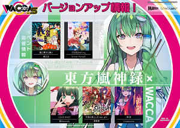 ■スイッチ新規タイトル『東方スペルバブル』に楽曲参加 (2020.01.23) Nintendo Switch用ソフト『東方スペルバブル』にSilver Forestが楽曲で参加します 発売日は2020年2月6日(木) 曲に合わせてリズムにノリながら遊ぶリズミカルパズルゲームです！ ぜひチェックしてみて下さい！ 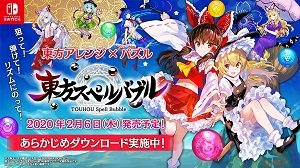 ■スイッチ版グルコスに「蒼空に舞え、墨染の桜」入曲決定 (2020.01.10) Nintendo Switch版グルーヴコースターに「蒼空に舞え、墨染の桜」が入曲決定！！ 追加ダウンロードコンテンツの「東方Projectアレンジパック2」に収録で1/16からダウンロードできるよ よろしく ■本年もよろしくお願いします (2020.01.05) 昨年の冬コミ、いつも以上にたくさんの方が来て下さいました 委託で新作を手に取ってくださった方もありがとうございます 2020年も頑張っていきますので、どうぞよろしくお願いしますm(_ _)m ■12/31 冬コミ (ナ-06a)お品書き (2019.12.25) 12月31日(火)のコミックマーケット C97に参加します Silver Forestのスペースは南4 ナ-06a 頒布する新作CDは、復帰したさゆりの新曲がそれぞれ入っています ①東方アレンジCD「幽滅クインラット」 ②ユーロビートCD「Super Forest Beat VOL.9」 ③ノンストップ EUROBEAT ベストCD「Super Forest Beat BESTⅤ」 ④トランス＆ハウス ベストCD「Super Forest Beat BESTⅥ」 ⑤先着 無料おまけポストカード になります お品書きはこちら 既刊についてはDVDなど小数持っていく予定です ■新作「幽滅クインラット XFD MV公開」 (2019.12.24) さゆり復帰 第４弾CD 東方アレンジ新作「幽滅クインラット」のクロスフェードMVを公開しました TRANCE ROCKぽいJ-POPメインの女性ボーカルCDです XFDmp3はこちら→【mp3】 特設サイトはこちらです↓  ■新作「SFB9 XFD MV公開」 (2019.12.23) さゆり復帰 第３弾CD 東方アレンジ新作「Super Forest Beat VOL.9」のクロスフェードMVを公開しました ユーロビートメインの4つ打ちクラブ系CDです XFDmp3はこちら→【mp3】 特設サイトはこちらです↓ ■新作「ベスト6 XFD MV公開」 (2019.12.22) さゆり復帰 第２弾CD 東方アレンジ新作「Super Forest Beat BESTⅥ」のクロスフェードMVを公開しました トランス＆ハウス ベストです XFDmp3はこちら→【mp3】 特設サイトはこちらです↓ 
■新作「ベスト5 XFD MV公開」 (2019.12.21) さゆり復帰 第１弾CD 東方アレンジ新作「Super Forest Beat BESTⅤ」のクロスフェードMVを公開しました ノンストップ EUROBEAT ベストです XFDmp3はこちら→【mp3】 特設サイトはこちらです↓ 
■冬コミ(C97)当選 (2019.11.01) コミックマーケット97でスペースをいただけました 12月31日(火) 南 ナ-06a です。新作作ります よろしく！ ■8/12 夏コミC96 (ニ-46a)お品書き (2019.08.08) 8月12日(月)のコミックマーケットに参加します Silver Forestのスペースは南ホール ニ-46a 頒布する新作は、 ①東方アレンジMV 新作DVD「Project.Dvd 3」 イベント限定DVD Sweet little Lily、Holy my Reincarnation、みょん＆みーなどが入って800円 
②ユーロビートCD新作CD「Super Forest Beat VOL.8」 ユーロビート中心 7曲入り1000円です  ③東方アレンジCD新作CD「Pray For」 ポップで可愛い感じの曲メイン 7曲入り1000円です  お品書きはこちら 
■8/12 夏コミC96 新作３ (2019.08.08) MV集第三段「Project.Dvd 3」 Sweet little Lily、Holy my Reincarnation、みょん＆みー など秘蔵動画を収録
■8/12 夏コミC96 新作２ (2019.08.03) 夏コミ新作その２ いつものユーロビートとダンストラック 
■8/12 夏コミC96 新作 (2019.08.02) 夏コミ新作できた！！！ 風の詩 のRemixなど 
■8/12 夏コミC96 (月南 ニ-46a)参加します (2019.07.02) 8月12日(月)のコミックマーケットに参加します Silver Forestのスペースは12(月) 南ホール ニ-46a です ユーロビートシリーズ新作がでるよー ■サイトURL変更 (2019.06.04) Silver Forestのサイトを再度引越ししました http://www.silver-forest.net/ 再度ブックマーク等の変更よろしくお願いします youtube https://www.youtube.com/channel/UC8ZEvXtWOwkyw4a0JAZqjmw https://twitter.com/Silver_Forest blogはこちら https://silverforest.blog/ ■5/5 例大祭 新作 (2019.04.30) Super Forest Beat VOL.7 
■12/30 冬コミC95 (ロ-13b)お品書き (2018.12.29) 12月30日(日)のコミックマーケットに参加します Silver Forestのスペースは東4ホール ロ-13b 頒布する新作は、 東方アレンジMV新作DVD「Project.D」 イベント限定DVD 4曲入り800円です ■MV XFD■ ■Project.D MVはこちら 東方アレンジCD新作CD「Super Forest Beat VOL.6」 ユーロビート中心 8曲入り1000円です 東方アレンジCD新作CD「Super Forest Beat VOL.5」 ユーロビート中心 8曲入り1000円です お品書きはこちら 
■新作情報 DVD (2018.12.29) 「Silver Forest Project.D」特設サイトはこちら↓ 「Silver Forest 2006-2016 BESTⅢ」より Silver Forest Project.D XFD 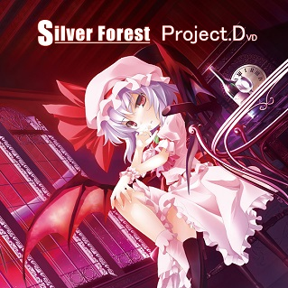 ■新作情報 SFB6 (2018.12.22) 「Super Forest Beat VOL.6」特設サイトはこちら↓ クロスフェード【XFD mp3】 ■新作情報 SFB5 (2018.12.19) 「Super Forest Beat VOL.5」特設サイトはこちら↓ クロスフェード【XFD mp3】 ■12/30 C95(ロ-13b) 冬コミ参加します (2018.12.04) 12月30日(日)のコミックマーケットに参加します Silver Forestのスペースは東 ロ-13b ■10/28 M3秋 (か-08b)お品書き (2018.10.21) 10月28日(日)のM3に参加します Silver Forestのスペースは第二展示場 1階 か-08b 頒布する新作は、 東方アレンジCD「EXTRA BITTER Ⅳ」 ■mp3 XFD■ イベント限定CD 4曲入り500円です お品書きはこちら 
■10/14 秋例大祭(て-33b)お品書き (2018.10.09) 10月14日(日)の博麗神社秋季例大祭に参加します Silver Forestのスペースは「て-33b」です 頒布する新作は、 東方アレンジCD「EXTRA BITTER Ⅳ」 ■mp3 XFD■ イベント限定CD 4曲入り500円です お品書きはこちら
■10/11 太鼓の達人(Switch)にケロ⑨destiny入曲 (2018.10.11) 『太鼓の達人 Nintendo Switchば～じょん！』で10/11より 「ケロ⑨destiny」が遊べるようになったドン あうあう ハイハイっ！！ ■10/14 秋例大祭(て-33b) (2018.10.09) 10月14日(日)の博麗神社秋季例大祭に参加します Silver Forestのスペースはて-33b 頒布する新作は 東方アレンジCD「EXTRA BITTER Ⅳ」 既刊CDはグルコス入曲が決定した 「Reversal Process」など 
■グルコスに「Reversal Process」入曲決定 (2018.10.05) タイトーさん グルーヴコースター4に「Reversal Process」が入曲決定！！ 10/17から遊べるよ 
■オンゲキに「sweet little sister」入曲決定 (2018.09.20) SEGAさん オンゲキに「sweet little sister」が入曲決定！！ 9/20から遊べるよ ■8/10 夏コミC94(ス-08b) お品書き (2018.08.08) 8月10日(金)の夏コミC94に参加します Silver Forestのスペースは東6ホール ス-08b 頒布する新作は ユーロビートCD「Super Forest Beat VOL.4」 お品書きはこちら  既刊はイベント限定の「EXTRA BITTER lll」  など など委託先はこちら ■サイト移転 (2018.05.10) Silver Forestのサイトを移転します 新しいURLはこちらです http://silverforest.blog/ youtube https://www.youtube.com/channel/UC8ZEvXtWOwkyw4a0JAZqjmw https://twitter.com/Silver_Forest こちらのサイトはURLが変わりますが、このまま残ります http://www.silver-forest.net/ よろしくお願いします ■夏コミ(金)ス08b 新作情報 (2018.08.01) 「Super Forest Beat VOL.4」特設サイトはこちら↓ クロスフェード【XFD mp3】 ■8/10(金) 夏コミ当選 ス08b (2018.07.01) 8月10日(金)コミックマーケット(C94)に参加します スペースは「ス-08b」Silver Forest Super Forest Beatの続編を作るよ ユーロービート！！ ■例大祭＆M3お疲れさまでした (2018.05.09) スペースにお越しのみなさまありがとうございました！ EXTRA BITTER lllは早めに完売してしまって、手に取れなかった方は申し訳なかったです 需要があれば夏コミに再度持っていきますね ■5/6 例大祭(I-41b) お品書き (2018.05.03) 5月6日(日)の博麗神社例大祭に参加します Silver Forestのスペースは東2ホール I-41b 頒布する新作は 東方アレンジCD「EXTRA BITTER lll」 ユーロビートCD「Super Forest Beat VOL.3」  お品書きはこちら  既刊は在庫最終の「2006-2012 BESTⅡ」「紅き月のアリア」「東方電撃波動⑨」

 「Super Forest Beat VOL.2」 「White Cleric」 「Super Forest Beat VOL.1」 「Super Forest Beat VOL.0」 「chill out vacation」 「とうほうインスパイア」 「2006-2016 BESTⅢ」 「2006-2016 BESTⅣ」 「your precious Trick Star」 「Reversal Process」 「Sweet little Lily」になります 委託先はこちら(EXTRA BITTER lllはイベント限定CDのため委託はありません) ■Super Forest Beat VOL.3 クロスフェードMVはこちら ■4/29 M3(R-14b) お品書き (2018.04.26) 4月29日(日)のM3春に参加します Silver Forestのスペースは第一展示場 R-14b 頒布する新作は 東方アレンジCD「EXTRA BITTER lll」 ユーロビートCD「Super Forest Beat VOL.3」 お品書きはこちら 委託先はこちら(EXTRA BITTER lllはイベント限定CDのため委託はありません) ■Super Forest Beat VOL.3 クロスフェードMVはこちら ■例大祭 M3 新作【②】EXTRA BITTER lll (2018.04.26) 例大祭 M3合わせで2作品目 「EXTRA BITTER lll」をイベント限定で頒布します 4月29日(日) M3(R14b) ＆ 5月6日(日) 博麗神社例大祭(I41b) で頒布予定です 「EXTRA BITTER lll」特設サイトはこちら↓ クロスフェード【XFD mp3】 ■例大祭 M3 新作【①】 (2018.04.18) 4月29日(日) M3(R14b) ＆ 5月6日(日) 博麗神社例大祭(I41b) の新作が完成！ 「Super Forest Beat VOL.3」特設サイトはこちら↓ クロスフェード【XFD mp3】
■グルコス4に「7days a week」入曲決定 (2018.04.05) | タイトーさん グルーヴコースター4に「7days a week」が入曲決定！！ 4/9から遊べるよ 
■MV大量追加 (2018.01.08) 「Silver Forest 2006-2016 BESTⅢ」より 夢幻の蒼空 ～ なつみver 夢幻の蒼空 ～ いちこver 「とうほうインスパイア」より GO higher! ご注文はうなぎとハニートラップですか？ もふもフレンズ 「Super Forest Beat VOL.1 ＆ 2」より Cosmic Driver Lunatic Rendezvous ■「Sweet little Curry (WiP)」MV (2018.01.05) 「Super Forest Beat VOL.2」より カレーの歌こと「Sweet little Curry (WiP)」のMVを作りました CD版の特設サイトはこちらです↓ 「Super Forest Beat VOL.2」  「White Cleric」 歌詞のページを更新しました ■冬コミ C93 お品書き (2017.12.26) 12月29日(金)の冬コミ(C93)に参加します Silver Forestのスペースは東7ホール え-01a 頒布する新作は 「White Cleric」 「Super Forest Beat VOL.2」 既刊を含めたお品書きはこちら  
 委託先はこちら ■10月 秋季例大祭 東方紅楼夢 M3 (2017.10.17) 10月は参加イベント盛りだくさん 10/15秋季例大祭、10/22東方紅楼夢、10/29M3 に参加します 頒布する新作は 「Super Forest Beat VOL.1」 既刊を含めたお品書きはこちら  
 委託先はこちら ■厄介家虎 MV完成 (2017.10.14) 新作「Super Forest Beat VOL.1」収録の 謎の戦国武将 厄介家MV ショート版を作りました CDの特設サイトはこちらです↓ 私立シルフォレ学園 放送部でネタ提供して下さった皆さま、ありがとうございました！ ■夏コミ新作2種類 (2017.08.03) 8月11日(金) 夏コミ C92 新作完成 その1 東方アレンジCD「chill out vacation」  その2 東方アレンジCD「Super Forest Beat VOL.0」 ショップ委託はこちらです ■つるぺったんが音ゲー入り SDVX (2017.07.13) 7/14から全国のSOUND VOLTEXに何とあの 「つるぺったん」が初登場！！ ボタンがつるつるになるまで、ぺったんしちゃえ つまみは、もぎ取るしかないで 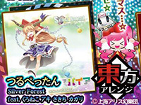 つるぺったんCD版はこちら↓ ■新作とうほうインスパイア委託開始 (2017.05.17) 新作東方アレンジCD「とうほうインスパイア」の ショップ委託始まりました CDの特設サイトはこちら↓ ■maimaiに「Phantasm Brigade」入曲 (2017.05.06) maimaiにSilver Forestの「Phantasm Brigade」が入曲 5/11から全国でプレイできるぞ ひゃっはー 
■サンボルに「Crystallize Forest」入曲 (2017.05.06) SOUND VOLTEXに奏瀬いちこが歌う「Crystallize Forest」が入曲 5/9から全国でプレイできるぞ よろしく 
■つるぺったんがチュウニズムに！？ (2017.04.01) 10周年を迎える「つるぺったん」が、替え歌あねぺったんになって チュウニズムに登場！！ とっても幼女な譜面に酔いしれろ！！ #エイプリルフール 
■太鼓の達人にアキが歌う新曲収録決定 (2017.02.02) 「太鼓の達人イエローバージョン」にSilver Forestのアキが歌わせてもらった 「願いはエスペラント」が収録決定！ 実装は春頃で、2/11～2/12ののJAEPOショーで先行お試し版が遊べるよ ■冬コミ お品書き (木)東4 シ-71a (2016.12.27) 新譜は 「2006-2016 BESTⅢ」 「2006-2016 BESTⅣ」各2000円と 「艦隊これくたーFinal」1500円の3種類 おまけDISC、リストバンドがついた「10周年記念セット」を6000円で頒布 スペースは12月29日(木) C91 東4 シ-71a「Silver Forest」 東1 C-40a「Axis Planet」でも新刊のみ委託頒布いたします 私立シルフォレ学園 学生証を提示してくれた方に、先着でプレゼントあり！！ 既刊を含めたお品書きはこちら 


■冬コミCD収録新曲MV (2016.12.24) クリスマスイブに、みなさんに新作MVを 「Silver Forest BESTⅣ」より 「＼嫦娥よ。見ているか！？／絶対に見てはいけない ２４Ｊ」の動画が完成だッ！ CDの特設サイトはこちらです↓ 
 委託ショップはこちら↓ ■jubeatに「蒼空に舞え、墨染の桜」収録決定 (2016.12.15) コナミさんの「jubeat」にSilver Forestの「蒼空に舞え、墨染の桜」が初登場 楽曲は12/20より順次解禁なので、要チェックだ！！！ 「蒼空に舞え、墨染の桜」のCD音源は新作「Silver Forest 2006-2016 BESTⅣ」に収録されています
■PS4版「東方深秘録」にSilver Forest楽曲収録 (2016.12.08) 12/8に発売のPlayStation4用ゲーム「東方深秘録(黄昏フロンティアさん)」にSilver Forestが作らせてもらった 「感情の摩天楼」という楽曲が収録されました！！ 時速100kmでぶっちぎる感じに仕上がっております まさかPS4のゲームに楽曲が収録される日が来るとは！！(PS4を持っているとは言っていない) 
■新作MV完成 ＼嫦娥よ。見ているか／ (2016.11.20) 東方アレンジCD「Reversal Process」より 電波ソング「意識高い系ヤンデレドM少女J」が動画になりました CDの特設サイトはこちらです↓ ■新作「XFD MV公開」 (2016.10.04) 東方アレンジCD 新作「your precious Trick Star」のクロスフェードMVを公開しました XFDmp3はこちら→【mp3】 特設サイトはこちらです↓ ■シンクロニカ「ケロ⑨destiny」入曲決定 (2016.10.11) バンダイナムコさん シンクロニカにSilver Forestの「ケロ⑨destiny」が入曲決定 10/20のアップデートで楽曲が収録されます シンクロニカ初登場だ！！ 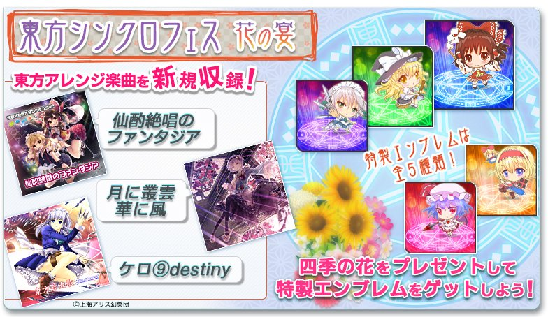 ■サンボルに「Crystallize Forest」入曲決定 (2016.10.06) コナミさん SOUND VOLTEXⅢに奏瀬いちこが歌う「Crystallize Forest」が入曲決定！！ 10/16 秋季例大祭で先行プレイできるぞ！ また「Crystallize Forest」が収録されているCD 「SOUND VOLTEX ULTIMATE TRACKS東方妖々夢&輝針城REMIX」も頒布される模様 
■グルコス3に「Material of Puppets」入曲決定 (2016.10.04) タイトーさん グルーブコースター3 リンクフィーバーに 奏瀬いちこ＆星河さきちが歌う「Material of Puppets」が入曲決定！！ 10/16 秋季例大祭で先行プレイできるぞ！ また「Material of Puppets」が収録されているCD「東方参面録」も頒布される模様 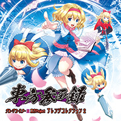 ■ニコ生はじめました (2014.05.07) だいたい木曜21時00分から放送してます タイムシフト有 co2370990 ■明けましておめでとうございます (2018.01.05) 本年もよろしくお願いします！ 今年も高速でぶっ飛ばしていきます 昨年の冬コミでスペースにお越しのみなさま、ありがとうございました また新作CDを聞いて下さった方も、ありがとうございます 「Super Forest Beat VOL.2」より カレーの歌こと「Sweet little Curry (WiP)」のMVを作りました ■冬コミ新譜 2作 (2017.12.21) 冬コミC93 スペースは12/29(金) え-01a で頒布する新作はこちら 東方天空璋アレンジCD 「White Cleric」 ユーロビートアレンジCD 「Super Forest Beat VOL.2」 ■冬コミ当選 (2017.11.21) 冬コミC93 当選しました！ スペースは12/29(金) え-01a ユーロビートアレンジCD 「Super Forest Beat」の新作作るよ M3、東方紅楼夢、秋季例大祭でシルフォレスペースにお越し下さった皆様 ありがとうございました ■10/15 秋 例大祭 お品書き 東1 い-10a (2017.10.10) 新譜は 「Super Forest Beat VOL.1」1000円 博麗神社秋季例大祭 スペースは東1ホール い-10a「Silver Forest」 ■秋季例大祭 東方紅楼夢 新作 「Super Forest Beat VOL.1」完成 (2017.10.05) 東方アレンジCD 新作 「Super Forest Beat VOL.1」が完成！！ 特設サイトはこちら↓ ■シルフォレの参加イベントまとめ (2017.09.28) 10/15(日) 博麗神社秋季例大祭 東1 い-10a 10/22(日) 東方紅楼夢 O-02a 10/29(日) M3 第二展示場1F か-19b 秋季例大祭に向けて、東方アレンジ新譜を制作中！！ (まだあまり出来てない) ライブは年内はなさそうな予感 ■9/9カレー会開催 (2017.07.17) 9月9日(金)夕方 星河さきちと『カレーを食べる会』が開催決定！！ 一次申込みは7月末まで 【詳細はこちら】 ■夏コミお疲れさまでした (2017.08.13) スペースに来てくださった方、ありがとうございました 差し入れもありがとうございます 今回スタッフ人数が多かったので、頂く時間があったのです(｀・ω・´) とっても助かりました わりあい涼しい夏コミだったので、かなりイージーモードでした 【歌詞のページ】を更新しました ■8/11 夏コミ お品書き 東5 シ-51b (2017.08.09) 新譜は「chill out vacation」1000円と 新譜は「Super Forest Beat VOL.0」1000円 9/9 カレー会＆ライブチケット 700円 しばいぬP▽・×・▽ Tシャツ 2500円 サイズS・M・L 既刊を含めたお品書きはこちら 

■C92 金シ51b (2017.06.15) 夏コミ(C92)1日目(金)に参加します スペースは東5 シ-51b「Silver Forest」 とってもEUROBEATな東方アレンジCD新作を鋭意制作中！！ ■6/24(土)ライブ Project.S ローチケで発売(Lコード71969) (2017.05.17) 6月24日(土)にライブイベント「Project.S 6th Stage」 5/19よりローソンチケットで一般席の発売開始！ ローソンチケット(Lコード71969) 詳細はProject.S 公式サイトにて Silver Forestの出演者は奏瀬いちこ、星河さきち、Makinouta、カガリ、NYO、Ktr、早瀬かな です ■例大祭 お疲れさまでした (2017.05.06) Silver Forestスペースに来て下さった方、委託ショップで「とうほうインスパイア」を 手にして下さった方、ありがとうございます 新作、楽しんでもらえれば嬉しいです 差し入れも沢山頂いてしまい、本当にありがとうございます みんなで集まった時に頂きます 6/24 ライブ「Project.S」のチケットをゲットした方は、一緒に楽しみましょう！！ ■6/24(土)ライブ Project.S 出演者第二弾 (2017.05.04) 6月24日(土)にライブイベント「Project.S 6th Stage」 Silver Forestの出演者第二弾はこちら 奏瀬いちこ、Makinouta、ktr 詳細はProject.S 公式サイトにて ■新作「とうほうインスパイア」完成 (2017.04.18) 第十四回 博麗神社例大祭 新作 「とうほうインスパイア」が完成したよ すっごいー、たのしー 特設パークはこちら↓ ■例大祭 お品書き 東6 あ-28b (2017.05.04) 新譜は 「とうほうインスパイア」1000円と 久々に作ったつるぺったん「東方萃奏楽」を1000円で頒布 6/24 ライブ「Project.S」の チケット S席を4500円、A席を3500円、Tシャツ2000円、タオル1500円 でそれぞれ頒布します スペースは5月7日(日) 東6 あ-28b「Silver Forest」 既刊を含めたお品書きはこちら 


■新作 クロスフェードMV完成 (2017.04.20) 東方アレンジCD「とうほうインスパイア」の クロスフェードPVを作りました CDの特設サイトはこちらです↓ ■冬コミ新作追加「艦隊これくたーFinal」 (2016.12.21) Axis Planetさんとの合作「艦隊これくたー」シリーズが遂に最終章 8bitピコピコチップチューンな楽しい楽曲が盛りだくさん 新曲含むCD2枚組 全28曲 1500円 CDの特設サイトはこちらです↓  ■冬コミ新作は音ゲーベスト「BESTⅢ・Ⅳ」 (2016.12.15) Silver Forest10周年！という事で、最近増えてきた音ゲーに収録してもらった楽曲と 2012年から2016年のベスト曲などをメインに、ベストCDを制作しました。 jubeat【新】、太鼓の達人、SOUND VOLTEX、ビースト、グルーヴコースター、 maimai、CHUNITHM、シンクロニカの収録曲を完全網羅 CDの特設サイトはこちらです↓  クロスフェード動画はこちらです 委託ショップはこちら↓ ■6/24(土)ライブ Project.S 開催決定 (2017.04.06) 6月24日(土)にライブイベント「Project.S 6th Stage」が開催決定！！ 場所は原宿アストロホール Silver Forestの出演者第一弾はこちら 星河さきち、カガリ、早瀬かな  今回のスペシャルゲストは 石鹸屋！ 詳細はProject.S 公式サイトにて ■例大祭14 あ28b (2017.04.05) 第十四回 博麗神社例大祭に参加します スペースは東6 あ-28b「Silver Forest」 とってもPOPで電波ソング満載の東方アレンジCD新作を鋭意制作中！！ ■M3 お品書き 第二2F ケ23a (2016.10.27) 10/30(日) M3に参加します スペースは第二展示場2F ケ-23a 新譜は 「your precious Trick Star」 その他、艦隊これくたーⅠ～Ⅴなどを頒布します Makinoutaさんとお待ちしまーす 東方の既刊はこちら 

■東方紅楼夢 秋季例大祭 新作「your precious Trick Star」完成 (2016.09.25) 東方アレンジCD 新作「your precious Trick Star」が完成しました CDの頒布スペースは 10/9(日)東方紅楼夢12 4号館 あ-19a「Silver Forest」 10/16(日) 博麗神社 秋季例大祭 東3 あ-33b「Silver Forest」 10/16(日) ライブイベント Project.S 5th stage 17:30～ 原宿アストロホール となります 特設サイトはこちらです↓ 委託ショップはこちら↓ ■夏コミ新作「Reversal Process」PV (2016.08.04) 東方アレンジCD 新作のタイトルチューン「Reversal Process」のPVが完成しました CDの頒布スペースは夏コミ2日目(土) 西3・4ホール ａ-65b「Silver Forest」 特設サイトはこちらです↓ 委託ショップはこちら↓ ■夏コミ新作 その２「艦隊これくたーⅤ」 (2016.08.01) 艦これBGMアレンジCD 新作「艦隊これくたーⅤ」が完成しました C90スペースは 西3・4ホール ａ-65b「Silver Forest」 特設サイトはこちら↓  ■Project.S 10/16(日)情報 (2016.10.14) ライブイベントProject.Sの出演者を大発表 Silver Forestからは奏瀬いちこ、星河さきち、Makinouta、祟拉カガリ、紗倉まゆこが参加します SYNC.ART'S、SOUND HOLICも参加するProject.S 5th stageは 2016年10月16日(日) 秋季例大祭あと17:30から都内で開催 場所は原宿アストロホール →地図 当日券もあるぞ！！ 詳細はProject.S公式サイトで 当日はこれをみんなで歌うぞ↓ 【mp3】 【歌詞】 ■秋季例大祭 お品書き 東3 あ-33b (2016.10.10) 新譜は 「your precious Trick Star」 ライブ関連で10/16ライブイベント「Project.S 5th stage ライブチケット」を3000円 「Tシャツ」を2000円、「タオル」を1500円、「シルフォレ10thリストバンド」を500円 にて頒布します スペースは10/16(日)秋季例大祭 東3 あ-33b「Silver Forest」 既刊を含めたお品書きはこちら

当日、17時30分からのライブのため、メンバーが早め(12時頃)に撤収すると思いますので、 御用のお方はお早めにお願いします その後は別メンバーにて頒布を引き続き行いますので、よろしくお願いします。 ■サンボルに「Crystallize Forest」入曲決定 (2016.10.06) コナミさん SOUND VOLTEXⅢに奏瀬いちこが歌う「Crystallize Forest」が入曲決定！！ 10/16 秋季例大祭で先行プレイできるぞ！ また「Crystallize Forest」が収録されているCD 「SOUND VOLTEX ULTIMATE TRACKS東方妖々夢&輝針城REMIX」も頒布される模様
■イベント参加情報 (2016.09.20) 10/9(日) 東方紅楼夢 4号館 あ-19a 新作CDあるよ！！ 10/16(日) 博麗神社 秋季例大祭 東3 あ-33b 10/16(日) ライブイベント Project.S 5th stage 17:30～ 原宿アストロホール チケットはメロンブックスさん ローソンチケット (Lコード：75181)にて販売中 ライブ詳細はこちらです→ Project.S 公式サイト 9/25(金) 東方LIVEBOX 出演 秋葉原Tiwn Box ■Project.S チケット (2016.09.03) Silver Forestも出演するライブイベント Project.S 5th stageのチケットが メロンブックスさんにて発売されます 一足先にライブ気分になれるTシャツなどのグッズも同時発売！ 合わせて「Silver Forest 2006-2012 BESTⅠ・Ⅱ」を4年ぶりに再販していますよー 9/7(木)からはローソンチケット (Lコード：75181) でもチケット販売が開始されます チケットのみゲットしたい方はこちらでもどうぞ ライブ詳細はこちらです Project.S 公式サイト ■夏コミ お品書き (土)西3・4 ａ-65b (2016.08.09) 新譜は 「Reversal Process」と 「艦隊これくたーⅤ」の2種類 各1000円 ライブ関連でProject.S 5th stage「ライブチケット」を3000円 「Tシャツ」を2000円、「タオル」を1500円、「シルフォレ10thリストバンド」を500円 にて頒布します スペースは 8月13日(土) C90 西4 ａ-65b「Silver Forest」 8月14日(日) C90 西4 ｌ-17a「Axis Planet」 既刊を含めたお品書きはこちら 


 ■夏コミ新作「Reversal Process」 (2016.07.30) 東方アレンジCD 新作「Reversal Process」が完成しました C90スペースは 西3・4ホール ａ-65b「Silver Forest」 特設サイトはこちら↓ ■Project.S 10/16(日)に開催決定 (2016.05.25) 先日復活をご報告したProject.Sですが、日程が決まりました 2016年10月16日(日) 秋季例大祭あと夕方に都内で開催します 出演はSOUND HOLIC、Silver Forest、SYNC.ART'S もう少し詳しい情報はSilver Forestのニコ生で少し出ていますよー ■例大祭新作「Sweet little Lily」 (2016.04.26) 東方アレンジCD 新作「Sweet little Lily」が完成しました 例大祭スペースは 東2ホール O-30b XFDmp3はこちら→【mp3】 特設サイトはこちら↓  PVはこちら ■艦これ新作「試製 艦隊これくたーⅤ」 (2016.05.06) 5/8(日) 砲雷撃戦！よーい！二十五戦目で 艦これBGMアレンジ「試製 艦隊これくたーⅤ」を頒布します スペースは東3ホール H-08 試聴mp3追加！ ■夏コミ 土曜 西ａ-65b (2016.07.26) 夏コミ(C90)スペース取れました！ スペースは8/13(土)西３・４ホール ａ-65b 初の西館2階 新作は東方アレンジCDを頒布予定 もうすぐ情報も出せそうだ ■スマホ版グルコスに「聖少女サクリファイス」入曲 (2016.06.28) 6月末よりスマートフォン版(iOS/Android)グルーブコースターに 奏瀬いちこ (ichiko)が歌う「聖少女サクリファイス」が入曲するよ！ 「聖少女サクリファイス」が収録されている「月の魔法少女」のCDはこちら ■「Sweet little Lily」 サンボル入曲 (2016.06.19) 「SOUND VOLTEX III GRAVITY WARS」に奏瀬いちこが歌う 「Sweet little Lily」が入曲しました！ 全国のゲームセンターで遊べるぞ！ 難易度は高めの模様 曲が収録されているCDはこちら↓ ショップはこちら↓ 「Sweet little Lily」の動画はこちら↓ ■グルコス3に「聖少女サクリファイス」入曲 (2016.03.10) 3月より稼働のタイトーさん グルーブコースター3に 奏瀬いちこ (ichiko)が歌う「聖少女サクリファイス」が入曲しました 「聖少女サクリファイス」が収録されている「月の魔法少女」のCDはこちら ■冬コミ まとめ (水)西2 う-01a 新刊は 「東方Fire&Ice」と 「艦隊これくたーⅣ」の2種類 各1000円 12月30日(水) C89 西2 う-01a「Silver Forest」 12月31日(木) C89 東3 キ-45b「Axis Planet」にて頒布します 新作クロスフェードmp3 → 【艦これXFDmp3】 【東方XFDmp3】  委託はこちら↓ ■例大祭 お疲れさまでした (2016.05.10) 例大祭スペースに来て下さったみなさん、ありがとうございました 委託ショップで新作を手にして下さったみなさんも、ありがとうございます 差し入れは美味しく頂きました。ごくごく、ぱくぱく さてさてSilver Forest、次の参加イベントは 5/22(日) Silver Forest ツーマンライブ 「黒子ききがSilverForestに誕生日を祝ってもらう会」です それから何とProject.Sが復活しました！ SOUND HOLIC、Silver Forest、SYNC.ART'Sが出演します こちらも日程が決まり次第、お知らせします ■例大祭 まとめ 5/8東2 O-30b (2016.05.04) ➡新刊は東方アレンジCD 「Sweet little Lily」1000円と 5/22(日) Silver Forest ツーマンライブ ➡ 「黒子ききがSilverForestに誕生日を祝ってもらう会」のライブチケット2000円 ➡東3ホールH-08「Silver Forest」にも【別の新刊アリ】 ➡先着でビニールバッグをプレゼント の4つが新作です 既刊含めた頒布物一覧はこちら 


■例大祭新作「Sweet little Lily」サンボル入曲 (2016.05.02) 東方アレンジCD 新作のタイトルチューン「Sweet little Lily」が 「SOUND VOLTEX III GRAVITY WARS」に入曲決定！！ 例大祭の東2ホール 企画広場でさっそく遊べるぞ CD特設サイトはこちら↓ 入曲する「Sweet little Lily」の試聴はこちら↓ CDのショップ予約はこちら↓ ■例大祭新作「Sweet little Lily」完成 (2016.04.26) 東方アレンジCD 新作「Sweet little Lily」が完成しました 例大祭スペースは 東2ホール O-30b XFDmp3はこちら→【mp3】 特設サイトはこちら↓
■Silver Forestツーマンライブ チケット予約開始 (2016.04.29) 予約は 「こちらから」 5/22(日) Silver Forest ツーマンライブ 詳細↓ 「黒子ききがSilverForestに誕生日を祝ってもらう会」 ■Silver Forest今後の予定 (2016.04.23) Silver Forestの今後の予定はこちら 5/5(木)【Silver Forest】私立シルフォレ学園【放送部】#21 5/7(土) 東方饗宴祭 ライブ出演 5/8(日) 第十三回 博麗神社例大祭 O-30b 5/8(日) 砲雷撃戦！よーい！二十五戦目 H-08 5/22(日) Silver Forest ツーマンライブ 「黒子ききがSilverForestに誕生日を祝ってもらう会」出演 ■冬コミXFD動画 (2015.12.23) 「東方fire&ice」XFD動画 【東方】Rising RockET / Silver Forest【星条旗のピエロ】 【東方】東方Fire&Ice / Silver Forest【XFD】 「艦隊これくたーⅣ」XFD動画 【艦これ】海図を広げて / Silver Forest【short】 【艦これ】Wosrt in the sea / Silver Forest【ヲ級】 ■冬コミ新作2「艦隊これくたーⅣ」完成 (2015.12.18) 艦これBGMアレンジCD 新作「艦隊これくたーⅣ」が完成しました 「Axis Planet」さんとのコラボ作品です！ 特設サイトはこちら↓ ■冬コミ新作「東方fire&ice」完成 (2015.12.17) 東方アレンジCD 新作「東方fire&ice」が完成しました 東方紺珠伝から3曲 XFDmp3はこちら→【mp3】 特設サイトはこちら↓ 
■冬コミ 2日目 西う01a (2015.12.07) 12月30日(水) コミックマーケット89 西2ホール う-01a「Silver Forest」にて参加します 東方アレンジCDを頒布予定 東方紺珠伝アレンジ多めだよ Axis Planetさんとの合同企画 艦これBGMアレンジCDも進行中 来週には詳細が出せるはず ■秋季例大祭 新作完成 (2015.10.07) 10月18日(日)「博麗神社秋季 例大祭」い-09bで 新作CD「秋霜烈日」を頒布します クロスフェードmp3はこちら→ 【XFDmp3】 特設サイトはこちら↓ 
■夏コミ新作情報 (2015.08.06) 8月14日(金) C88でもう1枚追加だっ 艦これBGMアレンジCD 「艦隊これくたーⅢ改」 Axis Planetさんとのコラボ第2.5弾 8月14日(金) C88 東6 ス-14a「Silver Forest」 8月16日(日) C88 西 よ-46a「Axis Planet」 で頒布します ■夏コミ新作情報 (2015.08.03) 8月14日(金) ス-14a「Silver Forest」で頒布する東方アレンジCD 「舞い降りた神の子」の特設サイトを開設しました クロスフェードmp3等はこちら→ 【XFDmp3】 
■太鼓の達人Vバージョンにも「闇の魔法少女」入曲 (2015.06.15) アーケード版太鼓の達人に続き、7月9日に発売されたPSvita版「太鼓の達人Vバージョン」に アキの歌う「闇の魔法少女」が収録されました 闇の魔法少女のmp3やCDはこちら↓  ■M3-2016春 シ-26b (2016.04.23) 4/24(日) M3-2016春 に参加します スペースは第二展示場 2F シ-26b です ■ライブ情報 3/25出演 (2016.03.23) 3月25日(金)に、メロンブックスさんのライブ 「東方LIVEBOX」に 出演させてもらいますよ 場所：秋葉原Twin Box GARAGE 入場無料(ドリンク500円) 日時：3月25日(金) 開場 18:30 開演 19:00 整理券配布開始 16:00～ 無料ライブの為、人が多い場合もあるみたいなので整理券があるとベター ■イベント情報 (2016.03.10) Silver Forestの今後の予定はこちら 3/25(金) ライブ出演 4/24(日) M3-2016春 参加 シ-26b 5/8(日) 第十三回 博麗神社例大祭 O-30b ■グルコスに「聖少女サクリファイス」入曲 (2016.01.06) 本日1月6日より、タイトーさん グルーブコースター2に ichikoが歌う「聖少女サクリファイス」が入曲します 新年に因んだ新アバター「申」プレゼントキャンペーンもあるよ 「聖少女サクリファイス」が収録されている「月の魔法少女」のCDはこちら ■新年ご挨拶 冬コミ無事終了 (2016.01.06) 冬コミでスペースに来て下さった方、差し入れを下さった方 委託でCDを手に取って下さった方、ありがとうございました！ 今年もSilver Forestをよろしくお願いします♪ ■1/17 砲雷撃戦 A-07 (2016.01.11) 1月17日「砲雷撃戦！よーい！二十三戦目」に参加します スペースはA-07 冬コミ新作「艦隊これくたーⅣ」を頒布します 既刊は 「艦隊これくたーⅢ改」 「艦隊これくたーⅢ」 「艦隊これくたーⅡ」 「艦隊これくたー」の4種類です 「艦隊これくたーⅣ」の動画等はこちら↓ 【艦これ】海図を広げて / Silver Forest【short】 【艦これ】Wosrt in the sea / Silver Forest【ヲ級】 ■グルコス3に「聖少女サクリファイス」入曲 (2015.11.02) 2016年3月頃稼働予定の「グルーヴコースターVer.3」に ichikoが歌う「聖少女サクリファイス」が収録されます 11/7 11/8にはロケテストあり またver.2でも1月頃からプレイ可能 CD版は「月の魔法少女」に収録されてるよー ■ビーストに「Phantasm Brigade」入曲 (2015.11.02) 10月8日(木)より「BeatStream」に 「Phantasm Brigade」が収録されます 描き下ろしの新作PVは七薙さんによる渾身の作品です CD版は「Silver Forest 2006-2012 BESTⅠ」等に収録っ  ■ライブ出演情報 (2015.11.02) 11/21(土)12:00～14:40「東方饗宴祭 vol.8」に出演させてもらいます メンバーはichiko NYO 「秋霜烈日」 「舞い降りた神の子」 「月の魔法少女」 など、 最近のCDからピックアップした真面目な曲？メインでやるよー ■秋季例大祭 まとめ (2015.10.15) 10月18日(日)「博麗神社秋季 例大祭」スペース：い-09bにて 新作CD「秋霜烈日」を500円で頒布します 【XFDmp3】 イベント限定CDですので委託の予定はありません 既刊CDと頒布物一覧はこちら↓ 
■10/18 博麗神社秋季 例大祭 い-09b (2015.09.19) 10月18日(日) 「博麗神社秋季 例大祭」に 参加します♪ ■9/20 砲雷撃戦 E-175 (2015.09.19) 9月20日(日) 「砲雷撃戦！よーい！軍令部酒保合同演習参戦目」に 参加します♪ スペース：E-175 開発に失敗して新刊はない模様 既刊はAxis PlanetさんとのコラボCD 「艦隊これくたー」 「艦隊これくたーⅡ」 「艦隊これくたーⅢ改」を持っていきます 
■イベント情報 9/20砲雷 E175 (2015.09.03) 9月20日(日) 「砲雷撃戦！よーい！軍令部酒保合同演習参戦目」に 参加しますー スペース：E-175 試製CDが作れればいいなぁ 何気にシルフォレで艦これイベント参加は初なのです ■ライブ情報 9/25出演 (2015.09.03) 9月25日(金)に、メロンブックスさんのライブ 「東方LIVEBOX」に 出演させてもらいますよ 場所：秋葉原Twin Box GARAGE 入場無料(ドリンク500円) 日時：9月25日(金) 開場 18:30 開演 19:00 整理券配布開始 16:00～ 無料ライブの為、人が多い場合もあるみたいなので整理券があるとベター ■歌詞を追加 (2015.09.03) 歌詞のページに 「舞い降りた神の子」の歌詞を追加しました ■夏コミ まとめ (金)東6 ス-14a 新刊は 「舞い降りた神の子」と 「艦隊これくたーⅢ改」の2種類 各1000円 8月14日(金) C88 東6 ス-14a「Silver Forest」 8月16日(日) C88 西 よ-46a「Axis Planet」にて頒布します 新作クロスフェードmp3 → 【艦これXFDmp3】 【東方XFDmp3】 委託はこちら↓ 既刊は東方アレンジCD36種、艦これBGM3種類 頒布物一覧はこちら 
■夏コミ当選 8/14(金) ス-14a (2015.06.12) 夏コミ当選しましたー スペースは8/14(金) 東 ス-14a 東方アレンジ新作作るよー ■例大祭新作「月の魔法少女」 (2015.04.29) 例大祭12 新作 東方アレンジCD「月の魔法少女」完成 クロスフェードmp3 →【XFDmp3】 ネット予約はこちらからどうぞ↓ ■「東方幻奏響UROBOROS肆」に参加 (2015.06.12) 虎の穴さんの『東方幻奏響UROBOROS肆』で1曲作らせて頂きました 8月14日 夏コミ(C88)で発売開始  ■東方深秘録で1曲作らせて頂きました (2015.06.12) 本家、黄昏フロンティアさまの「東方深秘録」で1曲作らせて頂きました 良くも悪くもシルフォレの曲は、他の曲とは全然雰囲気が違うぞ だが、それがいい  ■久々にライブに出るよー (2015.06.12) 6/27(土)12:00～14:30「東方饗宴祭 vol.6」 出演はichiko さきち NYO シルフォレの出番は後半の模様 曲は例大祭と冬コミCDから１曲ずつと、残りは定番曲 ■4/22 グルーヴコースター2 に入曲 (2015.04.22) 4月22日から「グルーヴコースター 2 ヘヴンリーフェスティバル」に アキが歌う「Faint Love」が収録されます Faint Loveは楽曲が面白い構成になってるので、 ぜひゲームセンターでプレイしてみてください CD版は「Silver Fortune」に収録されていますよー ■例大祭 お疲れさまでした (2015.05.19) スペースに足を運んで下さった方々、ありがとうございました！ 差し入れもありがとうございました。 何だかニコ生とかでネタに出来そうな差し入れもあったので、そろそろニコ生再開しようかな 「月の魔法少女」の歌詞をここにアップしました 「月の魔法少女」委託はこちらです↓ ■例大祭12 まとめ 東6 あ-45a 例大祭12 新刊は「月の魔法少女」1000円 あ-45a「Silver Forest」で頒布します クロスフェードmp3 →【XFDmp3】 通販はこちらからどうぞ↓ 頒布物一覧はこちら 
 今回はタペストリーありません ■5/10 例大祭 あ-45a (2015.03.15) 5月10日に行われる「博麗神社 例大祭」に受かっていました スペースは「あ-45a」です 新作に取り掛かった模様 ■4/26 M3委託参加 二展2F シ-13a「Axis Planet」 (2015.04.19) 4月26日に行われる「M3-2015春」に委託で参加します スペースは第二展示場２階 シ-13a「Axis Planet」さん 頒布してもらうCDは 「闇の魔法結界」 「艦隊これくたーⅢ」など ■1/25 砲雷撃戦！よーい！B-41 (2015.01.20) 1月25日(日)の「砲雷撃戦！よーい！十四戦目」ですが スペースB-41「Axis Planetさん」におじゃまします みりるんがお待ちしていますー 頒布は「艦隊これくたー」「艦隊これくたーⅡ」で、各1000円です 「艦隊これくたーⅢ」は在庫がないので委託ショップでお願い致します↓ ■1/22 グルーヴコースター2 に入曲 (2015.01.20) 1月22日(木)から稼働となる「グルーヴコースター 2 ヘヴンリーフェスティバル」に Silver Forestの楽曲「Keep the Faith」が収録されます 「Keep the Faith」をゲームセンターで聞ける日が来るとは！！ ■冬コミ お疲れさまでした (2014.12.29) Silver Forestスペースに来て下さった方、ありがとうございましたm(_ _)m 差し入れを下さった方もありがとうございます キノコ勢、そしてお酒、美味しく頂きます 新刊2種とも完売してしまい、購入できなかった方はすいませんでした 東方アレンジCD「闇の魔法結界」は 12/30(火) ヤ-54b「Axis Planet」で少しだけ委託頒布します 艦これBGM CD「艦隊これくたーⅢ」は委託ショップで販売します↓ ■冬コミ まとめ (2014.12.28) C87「Silver Forest」12/29 ネ-37b 頒布物まとめ 新刊 2種 東方アレンジCD「闇の魔法結界」 艦これBGM CD「艦隊これくたーⅢ」 何かお買い上げの方に A4サイズ トートバッグ プレゼント
 既刊一覧はこちら 
 早苗さんタペストリーの在庫があと僅か･･･ 委託ショップはこちら↓ Silver Forestの新刊は 冬コミ(C87)12/30 スペース：ヤ-54b「Axis Planet」でも頒布します ■冬コミ 先着プレゼント (2014.12.26) C87「Silver Forest」スペースでお買い上げの方に先着で A4サイズ トートバッグをプレゼント かなりの数があるので、おそらく全員分あると思いますが、お早目に  新作はこちらになります 「闇の魔法結界」 「艦隊これくたーⅢ」 冬コミ(C87)12/29 スペース：ネ-37b「Silver Forest」 冬コミ(C87)12/30 スペース：ヤ-54b「Axis Planet」で頒布するよー ■冬コミ(C87) 新作「艦隊これくたーⅢ」 (2014.12.22) Silver Forestの冬コミ新作 艦これ BGMアレンジCD「艦隊これくたーⅢ」 Axis Planetさんとのコラボ第二弾です 委託先はこちら↓ ■冬コミ(C87) 新作「闇の魔法結界」 (2014.12.20) Silver Forestの新作 東方アレンジCD「闇の魔法結界」 「太鼓の達人」でお馴染の「闇の魔法少女」も収録♪ クロスフェードmp3 →【XFDmp3】  委託先はこちら↓ ■12/9 太鼓の達人に「闇の魔法少女」入曲決定 (2014.11.25) バンダイナムコさんの「太鼓の達人」用に書き下ろしたオリジナル新曲 「闇の魔法少女」が配信決定！ アキが歌う強烈な電波ソングに酔いしれろ！！ 12月9日から叩けるドン mp3はこちら→「闇の魔法少女」mp3 歌詞はこちら→「闇の魔法少女」歌詞  ■12/29「闇の魔法少女」CD化決定 (2014.12.12) バンダイナムコさん「太鼓の達人」で大好評のオリジナル曲「闇の魔法少女」が 12月29日にCD音源化決定！ 「闇の魔法少女」も入ったSilver Forest新作CD「闇の魔法結界」は 12月29日コミックマーケット87 スペース：ネ-37b で販売予定！！ 各ショップで委託販売もあるよ♪ アキが歌う強烈な電波ソングで、闇に染まれよ！！ ■12/29 冬コミ 当選 ネ-37b (2014.10.31) 12月29日(月)のコミックマーケットC87に参加します！ スペースは「ネ-37b」です 秋季例大祭に続き、こちらも新作CD作る！ ■秋季例大祭 まとめ そ-10a (2014.11.21) 新作は「蒼天Explorer」5曲入りCD 500円 クロスフェードmp3 →【XFDmp3】  既刊は 「感情エグゼキュージョン」 「Silver Fortune」 「thousand mirage」など、ある分だけ BESTⅠの手元の在庫があと僅か･･･ 委託ショップはこちら↓ ■秋季例大祭合わせ 新作できました!! (2014.11.14) Silver Forestの秋季例大祭 新作「蒼天Explorer」が完成 クロスフェードmp3 →【XFDmp3】 委託ショップはこちら↓ ■11/24 秋季例大祭 当選 そ-10a (2014.10.22) 11月24日(月祝)の博麗神社 秋季例大祭に参加します！ スペースは「そ-10a」です イベント合わせで新作CD作るかも  ■夏コミ新作 特設サイト (2014.08.07) Silver Forestの夏コミ新作「感情エグゼキュージョン」の特設サイトはこちらです クロスフェードmp3 →【XFDmp3】  委託ショップはこちら↓ ■夏コミ新作 ２作目！！ (2014.08.08) Silver Forestの夏コミ新作２作目「艦隊これくたーⅡ」の特設サイトができましたー 「Axis Planet」さんとコラボ作品です クロスフェードmp3 →【XFDmp3】 特設サイト↓  PVはこちらです↓ 委託ショップはこちら↓ ■東方幻奏響に参加 (2014.11.08) 虎の穴さんの冬コミ合わせ新作「東方幻奏響uroboros弐」に参加させてもらいました  ■9/10 太鼓の達人に「夢幻の蒼空」入曲決定 (2014.08.28) バンダイナムコさんの「太鼓の達人」用に書き下ろしたオリジナル新曲 「夢幻の蒼空」が配信決定だよー！！ 9月10日から叩けるドン  ■歌詞置き場に新曲追加 (2014.09.27) 歌詞置き場に 「感情エグゼキュージョン」と 「艦隊これくたーⅡ」 の歌詞を追加しました ■9/14 砲雷撃戦よーい G-14 (2014.09.12) 9月14日 砲雷撃戦よーい G-14「Axis Planet」さんで 「艦隊これくたーⅡ」を頒布するよー 「Axis Planet」さんとコラボ作品です クロスフェードmp3 →【XFDmp3】 特設サイト↓ ■夏コミ無事終了 (2014.08.20) 新作を手に取って下さった方々、ありがとうございます また委託でしたが、スペースに来て下さった方、本当にありがとうございました！ 次の参加予定イベントは、通っていれば例大祭SP 冬コミあたりになりそうです ■夏コミ 頒布情報まとめ (2014.08.13) 8月16日(土)シ-34a とりあえず（仮）さんで 東方アレンジCD 「感情エグゼキュージョン」 【XFDmp3】 艦これBGMアレンジCD 「艦隊これくたーⅡ」 【XFDmp3】 を、それぞれ1000円で委託頒布させてもらいます とりあえず（仮）さんスペースでは とろろさん新刊 「夏夏ナツナツGoGo夏ックス」東方同人誌 500円 「暁ハメハメ鎮守府ＰＲ」艦これ同人誌 500円 も頒布されます(成人向けです) サンプル絵はこちら 1日目はNYOとアキがAxis Planetさんにおじゃましています 2日目は、もしかしたらスペースの近くにいるかもしれませんが、基本的にいないと思います 委託ショップはこちら↓ ■タイトー グルーヴコースターに「ケロ⑨destiny」入曲 (2014.08.07) タイトーさんのグルーヴコースターに「ケロ⑨destiny」が追加されます！ 8/12から全国でプレイ可能！！！ さらに「蒼空に舞え、墨染の桜」のEXTRA譜面の配信も決定ですよー ■夏コミ情報 新曲mp3 (2014.07.31) Silver Forestの夏コミ新作ですが、制作も佳境に入ってきました 完成した曲から 試聴mp3を公開していくよー 「太鼓の達人」用に書き下ろしたオリジナル新曲 「夢幻の蒼空【そら】」が遂に完成！！ 先行で新作CDにも収録させてもらう事になったので ドドーンと試聴mp3を公開です → 【mp3】 歌は新ボーカルのSAYAさんが歌ってくれましたー 太鼓の達人収録もお楽しみです！ ■タイトー グルーヴコースターに「蒼空に舞え、墨染の桜」入曲 (2014.07.27) タイトーさんのグルーヴコースターに「蒼空に舞え、墨染の桜」が入曲するよ 7/30から全国でプレイ可能！！！ ■歌詞置き場に新曲追加 (2014.07.16) 歌詞置き場に 「刹那 Over Drive」と 「Silver Fortune」 の歌詞を追加しました ■コナミ Beat Streamに「ケロ⑨destiny」入曲 (2014.07.17) コナミさんの新アーケードゲーム Beat Streamに「ケロ⑨destiny」が入曲しました 7/17から全国でプレイできるよー  ■夏コミ落選→委託します (2014.06.17) 夏コミ(C86)落選しました ありがたい事に、新作を委託させてもらえる事になりました 委託先はいつもジャケット絵を描いて頂いている、とろろさん「とりあえず（仮）」の所で スペースは(土)シ-34aになります  ■例大祭 新刊情報 (2014.05.02) 5月11日 例大祭 スペースは「あ-36a」 新刊は6曲入り 東方アレンジCD「刹那 Over Drive」を500円で初頒布しました スペースにご来場のみなさま、ありがとうございましたm(_ _)m クロスフェードmp3 XFD→【mp3】 特設サイト↓   委託先はこちらです ■冬コミ新作PV (2013.12.29) C85月プ-47aで頒布の新作 「Silver Fortune」より 「チルの★プリンセスさまっ♪マジBAKA2000%」のPVできました ■冬コミ 新作情報 (2013.12.20) 東方アレンジCD「Silver Fortune」 12月30日 C85(プ-47a)にて1000円で初頒布予定 Silver Fortuneクロスフェードdemo → 【XFD mp3】 ショップ予約はこちらからどうぞ↓   ■夏コミ 追加情報 (2014.08.14) 8月15日(金)M-04b Axis Planet さんスペースで 「艦隊これくたーⅡ」または 「感情エグゼキュージョン」 をお買い上げの方 先着50名さまにA2両面ポスタープレゼント!!  ■例大祭 頒布情報まとめ (2014.05.02) 5月11日 例大祭 スペースは「あ-36a」 新刊は6曲入り 東方アレンジCD「刹那 Over Drive」を500円で初頒布予定 XFD→【mp3】 既刊CDは全30種類 Silver Forest 2006-2012 BESTⅠ - Silver Forest 2006-2012 BESTⅡ - 紅き月のアリア - 東方電撃波動⑨ を2000円 Silver Fortune - thousand mirage - 神の奏でしセレナーデ - 蒼き月の鎮魂歌 - 三千世怪 - 妖しき夢のラプソディー Vermillion Summer - Ancient Blue - 永き夜のロンドⅡ - 永き夜のロンド - 月光乱舞 - 黄昏シューティングスター 東方秘封魔術 - 東方Starry-Eyed - 東方ノスタルジア - 東方夢想連歌 - 聖少女サクリファイス - Sentence 悠久パラダイム - しろうさぎ - 東方ねば～ランド２ - Reincarnation - 東方悠幻奏 - 東方蒼天歌 - Phantasm Brigade GRAZE を1000円で頒布します 既刊CD30種類に加えて、タペストリーも 
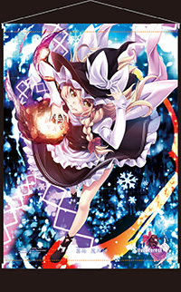 左上から霊夢、魔理沙、霊夢(ベスト)、魔理沙(ベスト)、早苗、妖夢(神霊廟)、妖夢、村紗、青娥で 各3500円です レイマリみょんは2種類あるのです 以上を頒布予定ですよ～ 委託先はこちらっ！ ■例大祭 新作情報 (2014.04.24) 6曲入り 東方アレンジCD「刹那 Over Drive」を 5月11日 例大祭「あ-36a」にて500円で初頒布予定 XFD→【mp3】 ■5/11(日) 例大祭 参加します あ-36a (2014.04.17) 次の参加イベントは5月11日(日)の例大祭です。 スペースは「あ-36a」 新作は鋭意作成中ですよ～ ■SOUND VOLTEXⅡに「Phantasm Brigade」入曲 (2014.05.07) コナミさんの「SOUND VOLTEXⅡ」に 「Phantasm Brigade」が入曲するよー 5/11「例大祭」で無料体験できるぞ！  ■太鼓の達人に「ケロ⑨destiny」入曲 (2014.04.25) バンダイナムコさん「太鼓の達人」アーケード版に 「ケロ⑨destiny」が入曲するよー 4/26 4/27「ニコニコ超会議３例大祭超濃縮版」 5/11「例大祭」 で先行プレイできるどーん！！ ケロケロどんどん ■追加情報まとめ (2013.12.29) 楽人さん、とろろさんともに新刊あるみたいです 楽人さん 東ニ-24b ゆにきゅう 新刊：シチュこれ 東方総集編  とろろさん シ-10b とりあえず(仮) 新刊：そんなの繁殖よお! ■冬コミ追加情報 (2013.12.26) C85追加情報です 新作タペストリー2種を頒布しますよ～ 12月30日 C85(プ-47a)にて3500円で頒布します それから、当日スペースで何かお買い上げの方に、先着で紙袋をプレゼントいたします スペースが広くなさそうなので、やや少な目の持込みになりそうです ショップ予約はこちらからどうぞ↓ ■東京ゲームショウ ステージライブ無事終了 (2013.09.24) 東京ゲームショウでのステージライブ無事終了しました 足を運んで下さった方、本当にありがとうございます！！ 久々のライブ、楽しかったです ■Plutinum Crest 夏コミ(A-69a) 頒布物まとめ (2013.08.08) C84頒布物まとめです Plutinum Crest新刊「thousand mirage」 11曲入りCD 1000円 → 【mp3】  ショップ委託はこちら↓ 例大祭頒布 「Just Broke up」 5曲入りCD-R 500円 (少数しかありません。5曲中3曲が新刊に入っているので、ご注意！！) 委託頒布↓ Silver Forest 2006-2012 BESTⅠ 2000円 Silver Forest 2006-2012 BESTⅡ 2000円  タペストリー (霊夢 魔理沙 早苗 妖夢 村紗 青娥) 各3500円 以上を頒布予定です～ ■Sadistic Love Lunatic EURO等 カラオケ配信決定 (2013.06.10) 「君が望んだ永遠」「ふぃーばー」「Lunatic EURO」「Sadistic Love」「幻想の果てに」が JOYSOUNDさんよりカラオケ配信決定です また「森羅結界」「Keep the Faith」「花の記憶」等数曲がカラオケ化に向けてエントリーしました 2012年までのSilver Forest楽曲はこれで全てになりますので 引き続き応援よろしくお願いします！ 【JOYSOUND リアルタイムリクエスト Silver Forest投票ページ】 ■KONAMI SOUND VOLTEXII に墨染追加 (2013.06.06) SOUND VOLTEXIIにSilver Forestの「蒼空に舞え、墨染の桜」が収録されました 6月5日から、全国のゲームセンターで遊べるよ～♪ ■携帯きせかえ始まりました～ (2012.11.22) ケータイ向けきせかえサイト「アニメきせかえ王国↑」で オリジナル携帯きせかえ始まりました～ ガラケー版(左)では「sweet little sister」「Phantasm Brigade」が聞けますよ～ 右がスマホ版(docomo)のイメージ図です 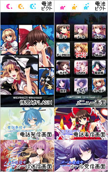 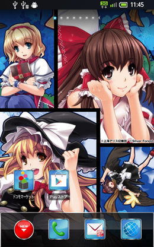 ■ベストCD 着うたになりました (2012.07.01) ベストCD新作から着うた配信はじまりました ■東京ゲームショウ2013 【ライブ時間変更】 (2013.09.18) TGS2013 ライブ出演時間が変更になりました 場所：幕張メッセ 国際展示場 9ホール インディーズゲームスペシャルライブステージに登場 日時：9/21(土)15:45～15:55 直前ですが出演時間が変更されました 3曲しか出来ないけど、頑張る ■東京ゲームショウ2013 ライブ情報詳細 (2013.09.11) TGS2013 ライブ情報詳細です あの私立シルフォレ学園が帰ってくる！！ のか？？ 場所：幕張メッセ 国際展示場 9ホール インディーズゲームコーナーのステージに登場 日時：9/21(土) ■久々のライブ情報 (2013.09.03) 久々のライブ情報です 9/21(土)に幕張メッセで行われる「東京ゲームショウ2013」に、 「Plutinum Crest powered by Silver Forest」で出演する事になりました～ 1年ぶりのライブ、楽しみだ～ 詳細は随時このサイトにてお知らせします～ ■夏コミお疲れさまでした～ (2013.08.13) スペースに来て下さった方々、ありがとうございました！！ 暑かったけど何とか乗り切れた それにしても、ホールの角は風が来なくてヤバかった。ヒャッハー 歌詞のページに新作の歌詞を追加しましたよ～ ■Plutinum Crest 夏コミ(A-69a) 新作情報 (2013.08.03) 夏コミですが、いつもよりかなり早く新作「thousand mirage」が完成しました まさかの7月中のマスターアップ！！ という事で、ぼちぼち情報を公開していこうと思います クロスフェードはこちら → 【mp3】 今回は制作陣にbitさん、ktrさん、K-MASERAさん等 Silver Forest時代のメンバーが多かったので クレジットを「Plutinum Crest powered by Silver Forest」にしました ヴォーカルには作詞を手伝ってくれていたmaicoro-phoneさんも初参戦です 特設サイトはこちらです↓  ■夏コミ 関連情報 (2013.08.06) 今回も新作のジャケット絵を描いて下さった楽人さんのところも新刊あるみたいです 3日目 L-34a「ゆにきゅう」 ■C84通りました 12(月)東A-69a (2013.06.07) 8/12(月)の夏コミですが、Plutinum Crestで通りました スペースは東A-69a になります 夏はプレスCD出したいなぁ ■例大祭 無事終了 (2013.05.27) 例大祭お疲れさまでした～ スペースに来てくださった方、ありがとうございました 久々にみんなに会えてやる気でました！！ 差し入れもありがとうございました もみまんパクパク 歌詞のページに「Just Broke up」 の歌詞をアップしましたよ～ 新作の1曲目とか、思いっきり趣味に走ったのでみなさんのお口に合うかどうか？ JAZZっぽいコード(#9とか♭13とか)普段使わないからなぁ ■例大祭(A-34b) 新作mp3追加、頒布物まとめ (2013.05.21) 新作「Just Broke up」から1曲デモ追加しました →【mp3】 例大祭10頒布物まとめです Plutinum Crest新刊「Just Broke up」 5曲入りCD-R 500円 委託頒布 Silver Forest 2006-2012 BESTⅠ 2000円 Silver Forest 2006-2012 BESTⅡ 2000円 タペストリー (霊夢 魔理沙 早苗 妖夢 みょん 村紗 青娥) 各3500円 以上を頒布予定ですよ～ ■KONAMI SOUND VOLTEX (2013.05.20) 例大祭に出展予定のSOUND VOLTEX体験版に「蒼空に舞え、墨染の桜」と「ケロ⑨destiny」が収録されますよ～ 無料みたいなので、ぜひ足を運んでみてください！！ 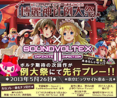 ■Plutinum Crest 例大祭(A-34b) (2013.05.19) Plutinum Crest新作「Just Broke up」ですが、だいぶ出来上がってきました 手焼きCD-Rなのでまだ制作中ですが、ちょろっと情報を 詳細はこちらのサイトで更新します↓ ■双剣乱舞 みょん&me カラオケ配信決定 (2012.09.03) 「双剣乱舞 みょん&me」がJOYSOUNDさんよりカラオケ配信決定です 9月20日頃から歌えるようになりそうです あと数曲Silver Forestの曲がカラオケ化に向けてエントリーしているので 引き続き応援よろしくお願いします！ 【JOYSOUND リアルタイムリクエスト Silver Forest投票ページ】 ■Plutinum Crest 例大祭(A-34b) (2013.05.10) Plutinum Crest新作ですが、ぼちぼち楽曲制作中です 詳細は来週くらいになりそうな予感 ■お知らせ (2013.03.26) Silver Forest解散後、たくさんの暖かいメッセージを頂きありがとうございます。 また、心配して頂いたのに状況を報告できず申し訳ありませんでした。 Silver Forestは昨年末を目標に復活を目指しておりましたが、 オリジナルメンバーでの再開を断念しました。 ボーカルさゆりですが、復調しつつあるものの活動は困難な状況です。 進展等ありましたら、このサイトにて報告致します。 今後NYOの個人プロジェクトとしてPlutinum Crestを立ち上げる事に致しました。 5/26(日)例大祭(A-34b)に参加予定です。 ■今年もよろしく！！ (2013.01.18) にょわー☆（物理） 遅ればせながらも、今年もよろしくお願いしますm(_ _)m さてさて問い合わせいただいている件ですが･･･ 「Silver Forest 2006-2012 BESTⅠどこで買えるの？」 「ベスト売ってないんだけど」 等、何件かメールを頂いています。 今のところ在庫がありそうなのが、あきばお～さんのみとなっています。 直接販売等はしていないので、こちらからよろしくお願いしますm(_ _)m  ■コナミ SOUND VOLTEXに「ケロ⑨destiny」入曲決定 (2012.12.13) SOUND VOLTEXに「ケロ⑨destiny」が入曲します。 12月14日から、全国のゲームセンターで遊べるよ～♪  ■夏コミ(C82)情報 (2012.08.08) Silver ForestのCDジャケットでお世話になっている絵師さんが スペースを出しているので、夏コミに行く人はよってみてくだしあ ■楽人さん 3日目 東 ク-11a 「ゆにきゅう」  ■とろろさん 2日目 シ-20a 「とりあえず(仮)」  シルフォレのCDジャケット絵も入った、イラスト集があるよー ■ロンドラ３さん(小牌) 2日目 東 X-55a「タラコスパ」   シルフォレのCDジャケット絵も入った、イラスト集があるよー (大事な事なので2回言いました) ■⑨destiny カラオケ配信決定 (2012.07.01) 「⑨destiny」がJOYSOUNDさんよりカラオケ配信決定です 8月頃から歌えるようになりそうです あと数曲Silver Forestの曲がカラオケ化に向けてエントリーしているので 応援よろしくお願いします！ 【JOYSOUND リアルタイムリクエスト Silver Forest投票ページ】 ■その他 ご報告 (2012.07.01) 夏コミ(C82)ですが、スペースはありません 新作もありません 申し込み済イベントについては以上になります 解散前に頂いていた依頼で、とらの穴さん『東方レイマリQUEST』で1曲参加しています ■Silver Forestの作品について (2012.05.31) 5/27(日)例大祭のベストCDを含め、旧作CDやタペストリーですが しばらく委託ショップさんに置いてあると思います 委託先はこちらです↓ ベストCD情報はこちら↓ Silver Forest BESTⅠ XFDmp3【A】 XFDmp3【B】 XFDmp3【C】 Silver Forest BESTⅡ XFDmp3【A】 XFDmp3【B】 ■今まで応援ありがとうございました！！ (2012.05.31) 例大祭でスペースに来て下さった方 お手紙や差し入れを下さった方、本当にありがとうございます。 また解散発表後、ツイッターやメールでのメッセージもありがとうございました。 Silver Forestが多くの人に応援してもらっている事を、改めて感じました。 Silver Forestは2012年5月末日をもって解散する事になりましたが 各メンバーそれぞれ、感動してもらえるような音楽を創れるよう努力してゆくと思います。 では、また皆さんに会える事を願って。 2012.05.31 Silver Forest代表NYO ■Silver Forestより 重要なご報告があります (2012.05.18) いつもSilver Forestを応援してくださっている方々へご報告がありますので、ご一読下さい  ■ニコニコ超パーティーお疲れさまでした ニコニコ超パーティー 楽しかったです 2曲だったのであっと言う間だったけど、やりきりました 出演者さん、参加者のみなさま、スタッフさん、お疲れ様でした！！ Silver Forestの次の参加イベントは、5/27 博麗神社例大祭です スペースは東6「あ-56b」 ■ニコニコ超パーティー18時30分～ イベントホールに出演 ニコニコ超パーティー ですが、出演は18時30分頃から、場所はイベントホールです Silver Forestの曲を聴いたことない人は↓こちらを 予習用→「ケロ⑨destiny」 「あうあ」の部分で、右手上げながらジャンプすると楽しくなれるよ 「sweet little sister」はあややが歌います 応援よろしく！！ ■イベント情報 博麗神社例大祭受かりました スペースは東6「あ-56b」です 4/30 M3ですが、時間的に参加が無理になったので スペースは頂いたのですが欠席いたします ■ニコニコ超パーティー(4/29)に出演するよー ニコニコ超パーティー まであと1週間を切りました 幕張メッセに向けて、リハーサルも最終段階です LIVEで演奏する曲は、ニコ動で再生数の多い曲の予定 いつものシルフォレとは違うボーカルと曲の組み合わせになるので、お楽しみに！！ 予習用→「ケロ⑨destiny」 会場にいる人は「あうあ」が来たら、右手上げながらジャンプ！！ ■「にゃんにゃん」「みょんⅡ」タペストリー 「神の奏でしセレナーデ」 のジャケット絵タペストリー作りました 各3500円で頒布予定です 問い合わせが多かったので、過去に作ったタペストリーも再販します 一部店舗でショップ予約やってます↓ ■【緊急】Project.S 4th stage 情報 3月17日(土) 「Project.S 4th stage」ですが、 Silver Forestボーカルのさゆりが急病のため参加できなくなりました 楽しみにして下さった方、本当に申し訳ありません Project.SのSilver Forestは予定通り出演しますが チケットの払い戻しが必要な方は、払い戻し方法についてメール致しますので 3月25日までに、こちらまでご連絡頂きますようお願いします silverf0rest⑨yahoo.co.jp ■Project.S 4th stage チケット情報 3月17日(土) 「Project.S 4th stage」のチケット情報出ました 2/11(土)午前10時より、ローソンチケットでチケットが発売になります 詳細です 公演日：3月17日(土) 16時開場 17時開演 21時終了予定 オールスタンディング (入場は整理番号順になります) 場所：新宿BLAZE Lコード：79630 価格：3500円 ドリンク代別(500円) 出演：SOUND HOLIC SWING HOLIC Silver Forest SYNC.ART'S 協賛：セブンスヘブンMAXION Silver Forestからは、 ■ライブ情報ですよ～ 3月17日(土) 「Project.S 4th stage」 そろそろ詳細も出るんじゃないかと･･･ いつものサークル (SOUND HOLIC SYNC.ART'S Silver Forest) でお送りします もう一つ 4月29日(日) 「ニコニコ超会議」への出場が決定しました 場所はまさかの幕張メッセ 頑張ります ■冬コミお疲れさまでした スペースに来て下さった方、ありがとうございました 差し入れも、ありがとうございますm(_ _)m 何やかんやカレンダーも無事配布できて 無事冬コミを乗り切ることができました 2012年もSilver Forestをよろしくお願いします ■新作歌詞公開しました 「神の奏でしセレナーデ」 「蒼き月の鎮魂歌」 「三千世怪」の歌詞を Lyricsのページに載せました ■冬コミまとめ 12/30(金) A-83b C81頒布物まとめです スペースは東3 A-83bで、新作CDは3枚 東方神霊廟アレンジメイン「神の奏でしセレナーデ」 さゆりソロ第二段「蒼き月の鎮魂歌」 東方アレンジオンリー「三千世怪」  これらを各1000円で頒布します また新作2種類を含むタペストリー7種類を、各3500円で頒布します 既刊CDは 紅き月のアリア と 東方電撃波動⑨ を2000円 妖しき夢のラプソディー - Vermillion Summer - Ancient Blue - 永き夜のロンドⅡ - 永き夜のロンド - 月光乱舞 - 黄昏シューティングスター 東方秘封魔術 - 東方Starry-Eyed - 東方ノスタルジア - 東方夢想連歌 - 聖少女サクリファイス - Lunatic Beat - 悠久パラダイム - しろうさぎ 東方ねば～ランド２ - Reincarnation - 東方悠幻奏 - 東方蒼天歌 - Phantasm Brigade - 東方萃奏楽 - GRAZE - 東方円舞曲 を各1000円で頒布します 今回は久々にさゆりもスペースにいるので、是非遊びに来て下さい ショップ予約はじまりました↓ ■VJ七薙さんから、ちょっと早いお年玉ですよ～ 
■PS3「うみねこのなく頃に」 PS3版 「うみねこのなく頃に ～真実と幻想の夜想曲～」が発売になりました  Silver Forestが作らせてもらった楽曲も、数曲使用されていますので ぜひ聞いてみてください  また今回、PS3版収録曲「Battle Field」の別バージョンを Silver Forest新作「蒼き月の鎮魂歌」に収録しています こっちも聞いてくだしあ ■PV付きCD「辿り着く君の道標」 スレイプニルさん(コ-23a)より、あややが歌わせてもらった 「辿り着く君の道標」が収録されているCD情報が届きました PVも収録されていますので、ぜひチェックして下さい  シルフォレの新作も、ぼちぼちいい具合に出来あがってきたので 近日中に情報公開できたらいいなぁ ■スマートフォンアプリ「東方機巧音匣」 ドワンゴさんよりスマートフォンアプリ「東方機巧音匣」が配信になりました 「7days a week」「Keep the Faith」「Phantasm Brigade」「sweet little sister」が目覚ましアプリに収録されてます 
 自分で使いたいんだけど、スマートフォンどころかiPadもiPodも持ってないので もらった画像を貼ってみました ぐぬぬ、悔しい・・・ ■C81当選 A-83b 冬コミ当選しました スペースは金曜、東A-83bです 現在、新作制作中ですが シルフォレワンマンLIVEで言ってたアレは、完成するのか！？ ■Project.S 4th stage 3/17開催決定 けっこう先の話ですが、来年3/17(土)に Project.S 4th stageの開催が決定しました 詳しくは後日Project.Sサイトで ■8/13 C80新作 クロスフェードmp3 お待たせしました 夏コミ新作クロスフェードmp3出来ました 妖しき夢のラプソディー 東方妖々夢アレンジ 9曲入りフルヴォーカル クロスフェードmp3 →XFD mp3 収録曲等の詳細はこちら↓ Vermillion Summer 東方アレンジ 10曲入りフルヴォーカル 風神録と星蓮船アレンジが多め クロスフェードmp3 →XFD mp3 収録曲等の詳細はこちら↓  ショップ委託はこちら↓ ■太鼓の達人になっちゃん登場！ 太鼓の達人に収録の「地平線のエオリア」を Silver Forestのなつみが歌わせてもらいました 楽曲が収録されている太鼓の達人新は、11月中旬より順次稼動するみたいです  ■お仕事情報 もう1つ 虎の穴さんの「東方マヨヒガＴＶ～博麗神社☆プロデュース～」で Silver Forestのアキが歌わせてもらいました  ■Flowering Night 2011 LIVE DVD もう１つ Flowering Night 2011のLIVE DVDが満を持して登場です 虎の穴さん、メロンブックスさんでの販売になります  ■歌詞ページ更新 歌詞のページに 「妖しき夢のラプソディー」と 「Vermillion Summer」の歌詞を追加しました ■例大祭SP2 無事終了 博麗神社例大祭SP2、スペースに来てくださった方ありがとうございました 差し入れを下さった方もありがとうございます みょんタペストリーがかなり早い時間帯でなくなってしまってすいませんでした 10月頃より各ショップにて委託予定です 次のイベントは、10/16(日) 東方紅楼夢に参加予定です スペースは6号館B A-20bです ■9/11(日) 例大祭SP2 あ-12b 9/11(日)の博麗神社例大祭 SP2に参加します 頒布スペースはあ-12b 夏コミ新作のタペストリーをもっていきます 妖夢と村紗を各3500円で頒布します CDは夏コミ新作の 妖しき夢のラプソディー Vermillion Summer を、それぞれ1000円で頒布 既刊CDは 紅き月のアリア と 東方電撃波動⑨ を2000円 Ancient Blue - 永き夜のロンドⅡ - 永き夜のロンド - 月光乱舞 - 黄昏シューティングスター - 東方秘封魔術 - GRAZE 東方Starry-Eyed - 東方ノスタルジア - 東方夢想連歌 - 聖少女サクリファイス - Lunatic Beat - 悠久パラダイム - しろうさぎ 東方ねば～ランド２ - Rebirth - Reincarnation - 東方悠幻奏 - 東方蒼天歌 - Phantasm Brigade - 東方萃奏楽 - 東方円舞曲 を1000円で頒布します また当日イベント終了後、ライブステージに出演します ボーカルはなつみ、あやや、アキで割と早い時間帯に出演する予定なので、良かったら遊びにきて下さい 演奏曲は新作 「妖しき夢のラプソディー」 「Vermillion Summer」からと、定番曲になりそうです あうあう ■追加情報 いつもSilver Forestのジャケット絵を描いて下さっている楽人さん(ゆにきゅう)が 例大祭SP2で新刊を頒布されます スペース「き-06a」  ヴォーカルあややが スレイプニルさんで1曲歌わせてもらいました 音楽CDとゲームをSilver Forestスペースで委託頒布します 音楽CD「ゆゆさま ～hungry for life～PV付き」 東方Project二次創作ゲーム「都死と世界樹と狼と～序章～」 各1000円です ■8/13(土) 夏コミまとめ東4 シ-60b C80まとめです Silver Forestの頒布スペースは東4 シ-60b 先着でペーパーバッグを無料プレゼント 新作CDは 妖しき夢のラプソディー Vermillion Summer の2作品 それぞれ1000円で頒布します 既刊CDは 紅き月のアリア と 東方電撃波動⑨ を2000円 Ancient Blue - 永き夜のロンドⅡ - 永き夜のロンド - 月光乱舞 - 黄昏シューティングスター - 東方秘封魔術 - GRAZE 東方Starry-Eyed - 東方ノスタルジア - 東方夢想連歌 - 聖少女サクリファイス - Lunatic Beat - 悠久パラダイム - しろうさぎ 東方ねば～ランド２ - Rebirth - Reincarnation - 東方悠幻奏 - 東方蒼天歌 - Phantasm Brigade - 東方萃奏楽 - 東方円舞曲 を1000円で頒布します Rebirth - 東方円舞曲は、在庫限りになります(無くなりそうです) タペストリー(うどんげ、輝夜、レミリア、フラン) の4種を各3500円で頒布します ■その他 関わった作品 ■Flowering Night 2011のLIVE DVD出ます 会場頒布は間に合わなかった模様で、ショップ委託のみになります ■FLOWERING NIGHT Theather 2011  フラワリのVJさん達が、ライブスクリーンに映っていた映像をDVD化 七薙さんが相変わらず凄いぜ ■虎の穴さん「東方SF（スクールファンタジア）」で アキさんが1曲歌わせてもらいました  ■夏コミ 2日目(土) 東4 シ-60b 夏コミ当選しました スペースは2日目(土)東4ホール「シ-60b」です ■歌詞のページを更新しました Ancient Blue 永き夜のロンドⅡの歌詞を Lyricsのページにアップしました ■FN11お疲れさまでした Flowering Night 2011 お疲れさまでした 最高のステージになったと思います シルフォレを初めて聞いたという人もいると思うので セットリストと収録CDを載せておきます Vo. なつみ 01. Holy my Reincarnation (東方秘封魔術) 02. 萃夢想歌 (Reincarnation) Vo. さゆり 03. Phantasm Brigade -as (Phantasm Brigade) 04. 永遠に幼き紅い月 (東方月見が丘) 05. sweet little sister (東方蒼天歌) Vo. あやや 06. Let me try again (永き夜のロンドⅡ) 07. 恋時雨 ～KOI SHIGURE～ (悠久パラダイム) Vo. なつみ さゆり アキ etc･･･ 08. ケロ⑨destiny (東方蒼天歌) 09. つるぺったん (東方萃奏楽) ■大変遅くなりましたが 「Ancient Blue」 「永き夜のロンドⅡ」 の壁紙ページを公開しました 次の参加イベントは夏コミになりそうです ぼちぼち新作に取りかかろうと思います ■例大祭8からのFN11 例大祭8お疲れさまでした スペースに来てくれた方、ありがとうございましたm(_ _)m 「EXTRA BITTERⅡ」ですが 、想像以上に人が並んでしまって 売切れで買えなかった人は、本当にすいませんでした ところで 「EXTRA BITTERⅡ」 「Ancient Blue」 「永き夜のロンドⅡ」 の壁紙ページが そろそろ公開できそうです それから、5/15(日)は Flowering Night 2011 に出演します 参加する人は、一緒に楽しみましょう！！ 告知をミスってしまったので、1曲だけセトリ公開 「永き夜のロンドⅡ」から 3曲目のLet me try againを演奏します ■5/8 例大祭8 新作 EXTRA BITTERⅡ 新作完成しました 6曲入りフルヴォーカル クロスフェードmp3はこちらです → →mp3 詳細はこちら↓ ■5/8 例大祭8 頒布物まとめ あ-33b 新作１「Ancient Blue」(CD) 1000円 →mp3 新作２「永き夜のロンドⅡ」(CD) 1000円 →mp3 新作３「EXTRA BITTERⅡ」(ウォーターレーベル特殊仕様 CD-R) 500円 (3限) →mp3 ★先着で紙袋をプレゼント タペストリー(うどんげ、輝夜、レミリア、フラン) 各3500円  既刊CDは 紅き月のアリア と 東方電撃波動⑨ を2000円 永き夜のロンド - 月光乱舞 - 黄昏シューティングスター - 東方秘封魔術 - 東方Starry-Eyed - 東方ノスタルジア 東方夢想連歌 - 聖少女サクリファイス - Lunatic Beat - 悠久パラダイム - しろうさぎ - 東方ねば～ランド２ Reincarnation - Rebirth - 東方悠幻奏 - 東方蒼天歌 - Phantasm Brigade - 東方萃奏楽 - GRAZE - 東方円舞曲 を1000円で頒布します ■「Ancient Blue」 「永き夜のロンドⅡ」 「Ancient Blue」 「永き夜のロンドⅡ」はショップにて委託中です 通販ショップさま↓ ■イベント情報 今後参加予定のイベントをまとめました 5/1(日) M3春 スペース：Q-01a 頒布物：「Ancient Blue」 「永き夜のロンドⅡ」 各1000円 タペストリー(うどんげ、輝夜、レミリア、フラン) 各3500円 既刊CD お買い上げの方先着で紙袋プレゼント 5/8(日) 例大祭8 スペース：あ-33b  頒布物：「Ancient Blue」 「永き夜のロンドⅡ」 各1000円 タペストリー(うどんげ、輝夜、レミリア、フラン) 各3500円 既刊CD お買い上げの方先着で紙袋プレゼント 5/15(日) Flowering Night 2011 2日目  ■私立シルフォレ学園 文化祭 お疲れさまでした！ 本当に最高のライブになりました 来てくれたみんな、ありがとう アンケートページできました 次回、より良いライブをするために、アンケートにご協力お願いします シルフォレのサイトURLの後ろに、ライブで発表されたキーワードを入力して下さい http://www.silver-forest.net/○○○○/ みたいな感じです ■このたびの東日本大震災で被災されたすべての方々に 心からお見舞い申し上げます 少しずつでいいので、みんながそれぞれ出来る事をやりましょう それが集まれば、きっと大きな力になるはず ■ライブＴシャツ ライブに合わせてTシャツできました！！ 当日13時30分より物販開始予定です その他の物販予定もあり↓ 
 ■イベント情報 4/17(日) サンシャインクリエイション51(スペース：ア-20a)ですが かなり早めに撤収すると思います ご用の方はお早めに 4/16(土) Silver Forest チャリティーライブ「私立シルフォレ学園 文化祭」 場所：原宿アストロホール チケット：2000円 ローソンチケットにて発売中 (Lコード：78227) ライブの収益は全額寄付致します 詳細はLIVE特設サイトに↓ 4/17(日) サンシャインクリエイション51 スペース：ア-20a 頒布物：新刊「Ancient Blue」 「永き夜のロンドⅡ」 各1000円 うどんげタペストリー、輝夜タペストリー 各3500円 既刊CD お買い上げの方全員に紙袋プレゼント ■例大祭 新作クロスフェード 2作品 ようやく新作の公開にこぎ着けました ■「Ancient Blue」 東方旧作中心です 新作「Ancient Blue」 クロスフェードmp3 → 【mp3】 詳細はこちら↓ ■「永き夜のロンドⅡ」 東方永夜抄中心です 新作「永き夜のロンドⅡ」 クロスフェードmp3 → 【mp3】 詳細はこちら↓ ■ライブチケット 3/13(日) 発売 Silver Forest ワンマンライブ「私立シルフォレ学園 文化祭」のライブチケットですが 3月13日(日)に発売決定しました ローソンチケットおよび例大祭スペース(あ-33b)にて頒布予定です 価格は2000円 (ドリンク代別) Lコード：78227 詳細はLIVE特設サイトに随時掲載します それから例大祭8の新作も、そろそろ告知できそうです 来週あたりかな ■ライブ情報 Silver Forest初のワンマンライブが開催決定！ 4月16日(土) 原宿アストロホールにて 私立シルフォレ学園 文化祭 詳細はこちらです↓  ■例大祭中止にともなう新刊等の頒布について 例大祭が中止になりましたので、新刊とチケットの頒布が出来なくなりました 楽しみにしていた方もいると思いますが、ご了承ください ■例大祭 頒布物まとめ あ-33b 例大祭8での頒布物まとめです ★先着で全員にペーパーバッグをプレゼント (数に限りがあります お一人さま1点とさせてもらいます) 新作「Ancient Blue」 1000円 →【mp3】 新作「永き夜のロンドⅡ」 1000円 →【mp3】 「永き夜のロンドⅡ」優曇華 タペストリー 3500円 「永き夜のロンド」輝夜 タペストリー 3500円 Silver Forest ワンマンライブ「私立シルフォレ学園 文化祭」のライブチケット 2000円 整理番号001～030、151～180番 を頒布します (2限 ポスター付き) 既刊CD (東方月見が丘を除くGRAZE以降のCD) 紅き月のアリアと東方電撃波動⑨が2000円 その他のCDが1000円です 委託はこちらです↓ ■例大祭8 あ-33b 第八回博麗神社例大祭通りました スペースはあ-33bです ■冬コミお疲れさまでした 冬コミ無事終了しました 今回は場所的な意味で暖かいだろうと油断してましたが 非常扉からの隙間風が半端なかったので、パーフェクトフリーズしました 差し入れを下さった方、ありがとうございました  ■「永き夜のロンド」クロスフェードmp3 新作「永き夜のロンド」の クロスフェードmp3できました → 【mp3】 詳細はこちら↓  あろみ舎さんに ■「永き夜のロンド」PVその2 ■冬コミまとめ 冬コミ(C79)まとめです 持っていくCDは新作「永き夜のロンド」(1000円) 既刊は 紅き月のアリア(2000円) 月光乱舞(1000円) 東方電撃波動⑨(2000円) を少しだけ持っていきます スペースは東 A-37a あろみ舎さんです あろみ舎さんが「マリサ☆クエスト～お宝探し大作戦～ DVD＋設定資料集（28P）セット」(1000円)を頒布します ■C79新作「永き夜のロンド」 新作は永夜抄オンリーでフルボーカルになりました 特設サイトはこちら↓ あろみ舎さんに ■東方キャラったー ver.03 東方占い的なものを作ってみました ランダムで結果表示するので、突っ込み所満載･･･orz あの美少女ゆかりんが あなたを東方キャラ化して隙間ツアーにご招待 もし、あなたが幻想入りしたら？的な事をつぶやきます ここ↓に名前を入力してね (twitterユーザーID推奨) 企画制作：先手必勝一撃必殺 絵：ろんど (タラコスパ)  ■冬コミ A-37a あろみ舎さん にて委託 冬コミはお休みにしようと思ってたんですが 新作が出来つつあるので、委託させてもらう事にしました 委託先は 30日(木) 東 A-37a あろみ舎さん スペースにシルフォレメンバーも何人かいると思います ただいま一緒にPV付き新作を制作中 詳細については、近日中に･･･ あろみ舎さん  ■その他お知らせ 虎の穴さんのコンピレーションCD 『東方幻想峠最速伝説 ～ プロジェクトDownHill Queen』で 1曲作らせてもらいました  ■新作制作開始 とっても遅くなりましたがProject.S 3rd stage お疲れさまでした 聴きに来てくれたみなさん、ありがとうございました！ 新作もぼちぼち取りかかっております 夏に続き、またもやボーカル曲が多くなりそうな予感 ■Project.S 3rd stage 出演者情報 さてProject.S 3rd stage まであと少しとなりましたが 今回もSilver Forestはサポートメンバーを迎えてバンド中心の編成です ボーカルは、さゆり なつみ あやや それからコーラス等でボーカルさんが2人参加 ギター(NYO) ベース キーボード ドラム という編成です 曲はアンケートを元に、GRAZE以降のCDからまんべんなく 新作からが多めです 練習頑張るぞ ■例大祭SP ライブ無事終了 例大祭SPですが、スペースに来て下さった方々 ライブに来て下さった方、ありがとうございました またライブ直前のイベントという事で、いつになく多くのドリンク等の差し入れを頂いてしまいました ありがとうございます さて次の参加イベントは 10月9日(土) Project.S 3rd stageです 詳しくはこちら↓ 10月11日(月祝)は 東方紅楼夢(第六回)に参加します スペース 4号館 A-51a ■イベント情報 Ⅱ 9/19 例大祭SP A-13a ～博麗神社例大祭SPスペシャルライブ～ に出演します 東6ホール 開演:15:30 詳細はこちら↓  ■イベント情報 9/19 例大祭SP A-13a 次の参加イベントは 9/19 例大祭SP スペースはA-13aです 新作はありません 頒布物は Project.S 3rd stage追加チケット 10月9日(土) 横浜ベイホール 3500円 詳しくはこちら↓ 既刊は 紅き月のアリア と 東方電撃波動⑨ を2000円 月光乱舞 - 黄昏シューティングスター - 東方秘封魔術 - 東方Starry-Eyed - 東方ノスタルジア - 東方夢想連歌 聖少女サクリファイス - Lunatic Beat - 悠久パラダイム - しろうさぎ - 東方ねば～ランド２ - Reincarnation - Rebirth 東方悠幻奏 - 東方蒼天歌 - Sentence - Phantasm Brigade - 東方萃奏楽 - GRAZE - 東方円舞曲 を1000円で頒布します ■歌詞のページに 紅き月のアリアと 月光乱舞の歌詞を追加しました ■夏コミお疲れさまでした～ スペースまで来て下さった方々、ありがとうございましたm(__)m また差し入れを下さった方、ありがとうございました こうして、また姫のカピバラコレクションが増えたのであった 遅くなりましたが、新作の壁紙ページに 隠しトラックなどの歌詞を掲載しました ■夏コミ頒布物まとめ 東3 A-84b 「紅き月のアリア」 東方紅魔郷アレンジ 2枚組 フルボーカル 2000円  「月光乱舞」 東方アレンジ さゆりオンリー フルボーカル 1000円  通販ショップさまはこちら↓ Project.S 3rd stageチケット 10月9日(土) 横浜ベイホール 3500円 2限 整理番号：001～050、451～550、801～850番 詳しくはこちら↓ 「紅き月のアリア」 タペストリー 各3000円 2種類  持っていく既刊CDは、GRAZE以降の全てと東方円舞曲です 久々に全CDがそろったのは良いけど、問題は机に乗るかどうか･･･ 東方電撃波動⑨ を2000円 黄昏シューティングスター 東方秘封魔術 - 東方Starry-Eyed - 東方ノスタルジア - 東方夢想連歌 - 聖少女サクリファイス Lunatic Beat - 悠久パラダイム - しろうさぎ - 東方ねば～ランド２ - Reincarnation - Rebirth - 東方悠幻奏 東方蒼天歌 - Sentence - 東方月見ガ丘 - Phantasm Brigade - 東方萃奏楽 - GRAZE - 東方円舞曲 を1000円で頒布します ■夏コミ新作Ⅱ「紅き月のアリア」 東A-84b C78新作 第二段「紅き月のアリア」 こちらは東方紅魔郷アレンジで2枚組フルボーカルになりました クロスフェード → mp3 特設サイトとトラック一覧はこのバナーをクリック↓  ■夏コミ新作「月光乱舞」 東A-84b 新作は、さゆりオンリーでフルボーカルになりました クロスフェード → mp3 特設サイトとトラック一覧はこのバナーをクリック↓ ■Project.S 3rd 10月9日(土) チケット販売について 10月9日(土)に開催が決定しているProject.Sですが チケット販売が8月中旬になるようです 詳細はプロSブログで↓ ■夏コミ新作 途中経過Ⅱ そろそろ新作をアナウンス出来そうな予感 予定通り○○○オンリー、フルボーカルに仕上がりそうだ ただいまマスタリング中 ■夏コミ新作 途中経過 今作っている夏コミ新作、この調子だとフルボーカルになりそうな予感 何気に「悠久パラダイム」から 8作もフルボーカルCDを作っていない事に、さっき気づいた まさかの「フルボーカル ボカロオンリー」とか、そんなオチだけはやめてくれ ■夏コミ通った！ A-84b 夏コミ(C78)通ったぜ 8/14(土) スペースは 東A-84b という事で、新作制作のまっただ中 今回は○○○オンリーみたいなの作ってます ⑨⑨⑨オンリー？？ 香霖×妖忌オンリー？？ 一体何だろうね？ 私立シルフォレ学園 校長先生にご期待下さい ■Project.S 3rd 10月9日(土) 横浜ベイホール 虎祭りも無事終わり、次のシルフォレの参加イベントは夏コミになりそうです ところで、まだまだ先の話ですが、今年もProject.S開催が決定しました Project.S 3rd stageが10月9日(土) に開催決定！！ 今回はいつもの3サークルに加え、Sound Onlineが参戦決定 出演：SOUND HOLIC、Sound Online、Silver Forest、SYNC.ART'S、SWING HOLIC 協力：セブンスヘブンMAXION 場所：横浜ベイホール 詳細はプロSブログで↓ ■Silver Forest 最新作 東方電撃波動⑨ ↓詳細と試聴mp3はこのバナーをクリック  黄昏シューティングスター ↓詳細と試聴mp3はこのバナーをクリック  ショップはこちらです↓ ■6/20「とら祭り2010」い-13B さて次の参加イベントですが、6/20「とら祭り2010」への参加が決定しています スペースは「い-13B」です 新作はありません SYNC.ART'Sさんの新作でさゆりが1曲歌わせてもらいました  ■カラオケ配信 投票開始しました ZUNさんおよび関係各位にご協力を頂きまして JOY SOUNDさまよりカラオケを配信する事になりました 投票で月間200位以内に入ると、配信されるみたいです 実際に歌えるようになるのは結構先みたいですが みなさん投票よろしくお願いしますm(_ _)m →【JOYSOUND リアルタイムリクエスト Silver Forest投票ページ】 なおsweet little sisterはリクエスト一覧にありませんが 入曲がほぼ確定しています ■歌詞追加しました 黄昏シューティングスターと 東方電撃波動⑨ の歌詞を Lyricsのページに追加しました ■M3春と流麗祭彩LIVE 無事終了 まずは流麗祭彩LIVEに来て下さった方、ありがとうございました！ Silver Forestの曲を知らない人も多かったと思いますが 会場の雰囲気が温かったので、楽しく演奏できました それからM3 新作もなかったので、スペースに来てくれた方と まったりお話しできて良かったです LIVEの感想もありがとうございましたm(_ _)m さて次の参加イベントですが、6/20「とら祭り2010」への参加が決定しています スペースは「い-13B」です  ■M3春 5月5日 F-18 次のイベントですが、5月5日 M3春に参加します スペースは1階 F-18です 残念ながら新作はありませんが、良かったら寄ってみて下さい 持っていくCDは 東方電撃波動⑨ - 黄昏シューティングスター 東方秘封魔術 - 東方Starry-Eyed - 東方ノスタルジア 東方夢想連歌 - 聖少女サクリファイス - Lunatic Beat - しろうさぎ - 東方ねば～ランド２ - Reincarnation 東方悠幻奏 - 東方蒼天歌 - Phantasm Brigade - 東方萃奏楽 - GRAZEです それからもうひとつ参加イベント 5月3日流麗祭彩 LIVE 2010で、なつみが2曲ほど歌わせてもらいます 詳細はこちら  ■カラオケ配信 投票曲追加 JOY SOUNDのリクエスト投票曲に 「7 days a week」と「ケロ⑨destiny」が追加になりました 投票はこちらから →【JOYSOUND リアルタイムリクエスト Silver Forest投票ページ】 ■最近多い質問の回答です ゆづか姫が歌っているCDはどれですか？ →東方電撃波動⑨ です ちゃい名義で2曲歌ってくれました 自演乙選手の入場曲のCDはどれですか？ →「つるぺったん。」と「つるぺったん」を合体させて編集した特別verで 東方電撃波動⑨と 東方萃奏楽にそれぞれ収録されています 東方電撃波動⑨DISC1 13曲目のタイトルと歌詞を教えて下さい →タイトルは「花粉症にはご用心」です ■次の参加イベント 5月5日 M3春 F-18 次の参加イベントですが、5月5日 M3春に参加します スペースはF-18です ■例大祭 お疲れさまでした 例大祭スペースに来てくださった方、ありがとうございました！ ペーパーバッグのプレゼントが大変でしたが、無事完売しました それから差し入れを下さった方、ありがとうございますm(__)m よく考えたら、例大祭の日はホワイトデーだった だからチョコがいっぱいなのか 当日はZUNさんの打ち上げにも参加させて頂いて 朝から晩まで東方な一日でした ■例大祭 まとめ へ-04a 例大祭での頒布物をまとめました 新作は 「東方電撃波動⑨」と 「黄昏シューティングスター」の2種類です 先着でペーパーバックとポスターをプレゼントします 「東方電撃波動⑨」 は2枚組で2000円 mp3試聴→■ ■ 「黄昏シューティングスター」は1000円で頒布します mp3試聴→■ 既刊は 東方秘封魔術 - 東方Starry-Eyed - 東方ノスタルジア - 東方夢想連歌 - 聖少女サクリファイス - Lunatic Beat - しろうさぎ 東方ねば～ランド２ - Reincarnation - 東方悠幻奏 - 東方蒼天歌 - 東方月見が丘 - Phantasm Brigade - 東方萃奏楽 - GRAZE を持っていきます。それぞれ1000円で頒布します 悠久パラダイム - Rebirth - Sentence - 東方円舞曲 は在庫がないので、欲しい方は委託先のショップを探してみて下さいm(_ _)m ■例大祭関連で参加した作品とか 第7回博麗神社例大祭 公式コンピレーション・アレンジCD 流麗祭彩2に参加しました  A-Oneさん新作「PLUG IN PLUG OUT」で1曲提供させて頂きました  オーエン中Ⅰ いつもジャケット絵を描いて下さっている楽人さんの新刊 例大祭スペース：東6 け-08a ゆにきゅう  オーエン中Ⅱ 流歌さんとSHMさんの新作 男性ボーカルオンリーだよ オーエン中Ⅲ いつもお世話になってる方がスペース出してました ち-55b G-yuki ■例大祭チケットが届いたぞ テンション上がってきた！ スペースは「へ-04a」でした それで新作なんだけど、今回のはヤバいよ ゲストの方の曲だけで、おなか一杯になれる 良い仕上がりにしたいです ■例大祭 へ-04a 例大祭通りました！！ スペースは「へ-04a」の模様 という事で、新作の制作真っ只中です 今回は東方星蓮船がアレンジがありつつも 各東方作品からまんべんなく収録されています 原曲人気の曲が多いなあ それからゲスト企画みたいな事やってます ボーカルさん、アレンジャーさん共に、かなり沢山の方が参加してくれました 詳細は随時このサイトで ■うみねこのなく頃に散 EP6 Silver Forestのオリジナル楽曲を うみねこのなく頃に散 Episode6で使ってもらいました 「battle field」という曲なんですが、なんとボーカルのさゆりが作曲アレンジMIXしています まだ未熟なところもあると思いますが、ぜひ聞いてみて下さい  ■animenitro2～ANiReMATiON EGGS～ エヴァンゲリヲンの「魂のルフラン」アレンジをSilver Forestが作らせてもらいました vocalはさゆりでトランスアレンジです 1月27日より、TSUTAYAさん、タワーレコードさんで発売です  ■新作委託開始 新作「東方秘封魔術」「東方Starry-Eyed」の委託販売がはじまりました 東方秘封魔術 → 試聴用mp3 東方Starry-Eyed → 試聴用mp3 
 ■サイトのURL変更 http://www.silver-forest.net/ ずっと前にURLを変更したものの、告知していなかったので･･･今さら 新URLはこちらです↓ http://www.silver-forest.net/ リンクして下さっている方は変更お願いしますm(_ _)m ■2/14 バレンタインライブ終了 ライブに来てくれた方、ありがとうございましたm(__)m チケット告知が1週間ほどしか出来なかったのにも関わらず たくさんの人と一緒に盛り上がれてよかったです やっぱりライブは楽しい JIMANGさん、自演乙さんとの絡みもあって 人との出会いから得られるものって、大きいんだなあと感じました ライブに来てくれた人とも、チョコっと何かが繋がったはず これからも出会いを大切にしていきたいです ライブの感想、苦情、気づいた事など 「ここ、こうした方がいいんじゃないの」的な事がありましたら アンケートサイトに書いて下さい シルフォレのURLの後ろに、当日発表したキーワードを入れるとサイトに飛べます http://www.silver-forest.net/○○○←ココ よろしくお願いします ■2/14ライブ 物販スペース追加 2/14のライブですが物販スペースが開設されるみたいなので 3種類ほどCD持っていきます チケットですが通販は終了していますが 会場のメイドＩＮひるずカフェで当日券を購入できるみたいです 詳しくはこちら↓  ■2/14ライブ情報 ライブまであと少し リハーサルも大詰めです ライブ情報です 出演メンバーはさゆり、なつみ、NYOの3人 曲は新作から少しと、お約束の電波ソング、人気曲が中心です お楽しみに！ ■2/14ライブ チケット情報 2/14のライブチケットですがサーパラショップで発売中です また、ライブ会場のメイドＩＮひるずumu カフェでも直接購入可能です ライブ詳細です 場所：六本木ヒルズ メイドＩＮひるずumu カフェ 開場：20:00 開演：20:15 出演：Silver Forest、JIMANG MC：長島☆自演乙☆雄一郎 チケット：2000円(ドリンク代別)   ■ライブ告知 2/14 久々のライブです！ 2/14(日)夕方よりライブイベントに出演させてもらう事になりました 場所は東京都内、チケットは2月初旬より発売予定です 詳細が決まりましたら、ここで告知しますね～ ■久々にライブ？ 2月にちょっとしたライブイベントに出演するかもしれません 詳細が決まったら告知しますね～ ノシ ■冬コミ無事終了 スペースまで来て下さった方、ありがとうございました！ また差し入れを下さった方、スタッフに声をかけて下さった方、本当にありがとうございます 頒布スピードが上がってきたので、午前中であらかた終了しました ■冬コミ新作情報まとめ【シ-44b】 今回も会場に来てくれた方に先着でおまけがつきます ロゴと新作のステッカーで、DSiやPSPに貼れる仕様になってます 欲しい人はお早めに！ もって行くCDは新作「東方秘封魔術」「東方Starry-Eyed」が各1000円 旧作も再プレスしているものは全て持っていきます こちらも各1000円で頒布します 頒布するCD一覧 東方秘封魔術 - 東方Starry-Eyed - 東方ノスタルジア - 東方夢想連歌 - 聖少女サクリファイス - Lunatic Beat - 悠久パラダイム - しろうさぎ - 東方ねば～ランド２ Rebirth - Reincarnation - 東方悠幻奏 - 東方蒼天歌 - Sentence - 東方月見が丘 - Phantasm Brigade - 東方萃奏楽 - GRAZE - 東方円舞曲 ■新作トラックリスト更新 東方秘封魔術、東方Starry-Eyed両タイトルの詳細を、アップデートしました バナークリックで、特設サイトにワープします
ショップ予約始まりました ■新作クロスフェードmp3 無事、マスター入稿しました 今回は久々にロックやバーラドが復活して、バラエティーに富んだ内容になってます という事で、冬コミ新作のクロスフェードmp3アップしました 東方Starry-Eyed → 試聴用mp3 東方秘封魔術 → 試聴用mp3 締め切りに追われる日々が終わったはずなのに 何故か忙しくて、いろいろ更新できないですよ･･･orz 各曲ごとのmp3は近日中に･･･ ■新作情報Ⅱ【東方Starry-Eyed】 冬コミ2作品目 こっちは東方星蓮船アレンジが中心です 2タイトルともまだ入稿してません;;; 特設サイトの中には誰もいませんよ 「東方Starry-Eyed」のゲストはA-One Shihoriさんです とっても可愛い曲を歌ってくれました  試聴mp3と曲リストは情報が確定したら随時更新しますよ～ ノシノシにょろん ■新作情報【東方秘封魔術】 だいぶ完成が近づいてきたぞー！！ という事で、新作情報とバナー貼ります しかし、まだまだ油断は出来ない 時間がないので、特設サイトの中はもぬけの殻 試聴mp3と曲リストは情報が確定したら随時更新しますよ～ ノシ ■絶賛修羅場中 ただ今ヘル状態 早くヘブン状態になりたいです 今回のアレンジは、前回が4つ打ちメインだったのに対して ロックっぽい曲も復活してます さゆりが歌うロック、あれはいいものだ 試聴mp3はもう少しお待ちを ところで新作は秘封倶楽部中心なのに、タイトルには東方が付くという･･･ 幻想郷の境界の外に、蓮子たちの世界があるとか いろいろ考えながら作った結果がこれだ ■冬コミ作品制作中Ⅱ 少しずつ曲が出来てきました 大空魔術アレンジが多めです 大空魔術は良い曲多過ぎて、けっこう偏ってしまった そして、今のところ電波曲が1曲もないという Lunatic Beat以来の電波ソングなしか？？ ■冬コミ作品制作中 冬コミに向けて本格稼動しました アレンジ曲は東方星蓮船と秘封倶楽部が中心になりそうです それから今回も、話題のあのサークルさんとコラボがありそうです 詳細は後日････ ■冬コミ通りました！ シ-44b コミックマーケット(C77) 12/30(水)に参加します スペースは 東 シ-44b 東方アレンジ新作を頒布予定 本腰入れて作ります ■冬コミ新作制作開始 外部サークルさんの依頼も終わりが近づいてきたので 新作の制作を再開しました 次の参加イベントは通ってたら冬コミ(C77)です ■M3 お疲れさまでした スペースまで来て下さった方、ありがとうございます 差し入れを下さった方も感謝です M3は横浜に会場が移って周辺がおしゃれだったので 帰りにカップルだらけの場所を通ってしまって、浮きまくりました 何？このリア充空間･･･orz M3 紅楼夢合わせで既刊が復活しました ■イベント情報 10/11 M3 A-27 何曲か作ったんですが、新刊はなさそうです 持って行くCDはこちら 「東方ノスタルジア」 「東方夢想連歌」 「聖少女サクリファイス」 「Lunatic Beat」 「悠久パラダイム」 「しろうさぎ」 「Rebirth」 「Reincarnation」 「東方悠幻奏」 「東方蒼天歌」 「Sentence」 「東方月見が丘」 「Phantasm Brigade」 「東方萃奏楽」 「GRAZE」 「東方円舞曲」 「東方ねば～ランド２」 各1000円で頒布予定です ■イベント情報 M3 A-27 10月11日(日) M3に参加します スペースはA-27です 紅楼夢に行けないじゃないか･･･orz ■CD再販情報 問い合わせを頂きましたCDですが 東方蒼天歌を各ショップさまにて再販しています Phantasm Brigadeを9/11頃より再販しています 東方円舞曲は メロンブックスさん、 ゲーマーズさんに在庫がある模様です ショップさま一覧(通販) ■夏コミお疲れさまでした 暑い中スペースまで来て下さった方、ありがとうございました！！ 今回は頒布方法を少し工夫したので、だいぶスムーズだったかと思いますが お気づきの点があれば、アンケート等によろしくお願いします さてサークルの中の人はちょろっと夏休みですが じきに学校とか仕事とかですね･･･orz 油揚げで釣られてると分かっていても、一日中働きます ■C76まとめ 8/15 A-73b 夏コミ頒布物のまとめです ・新作2種類 「東方ノスタルジア」と 「東方夢想連歌」 各1000円 ・A4クリアファイル 先着で無料配布 ・既刊 「東方ねば～ランド２」 「聖少女サクリファイス」 「Lunatic Beat」 「悠久パラダイム」 「しろうさぎ」 「Rebirth」 「Reincarnation」 「東方悠幻奏」 「東方蒼天歌」 「Sentence」 「東方月見が丘」 「Phantasm Brigade」 「東方萃奏楽」 「GRAZE」 「東方円舞曲」 各1000円 の予定です ■C76おまけ情報 A-73b 夏コミ新作のおまけできました 今回はA4サイズのクリアファイルを作ってみました まだ届いてないので、画像がないのが残念ですが 例によってイベントスペースに来て下さった方に、先着でお1人さまに1枚プレゼントです ところで今回もイベントに旧作を持ち込む予定ですが、列の進みが遅いと評判なので コミケの中の人と相談の上、新作だけ買える列と旧作も一緒に買える列に、列が分かれる予定です 果たして上手くいくか分かりませんが、例の祭りよりはマシになるかと･･･ 頒布予定のCDは、新作2種類「東方ノスタルジア」、 「東方夢想連歌」 東方円舞曲と東方ねば～らんどⅡ、GRAZE以降に頒布したCD全てです 
■「東方ノスタルジア」に試聴曲追加しました 予約中の委託ショップさんが増えたので、もう一回ペタ↓ 
 ■夏コミでお手伝いした作品紹介 SOUND HOLICさんの 「地 KUNI」で、なつみが1曲歌わせてもらいました  セブンスへブンMAXIONさんの 「東方恋想郷」で、1曲アレンジさせてもらいました 歌はさゆりです  SYNC.ART'Sさんの 「REQUIEM」で、なつみが1曲歌わせてもらいました  葉月ゆらさんの 「東方来夢来人」で1曲アレンジさせてもらいました  緋想天企画もの 「魘」で1曲アレンジさせてもらいました  今回も頑張ったなぁ ■「東方ノスタルジア」完成しました！！ という事で、クロスフェードです → ■mp3 ようやくCDが完成したので、おまけ作りに励みます 詳細と各曲のデモmp3はこちらです↓ ■夏コミ新作「東方夢想連歌」完成しました という事で、クロスフェードです → ■mp3 詳細と各曲のデモmp3はこちらです↓ だが、まだだ! まだ終わらんよ････締切りが あ…ありのまま 今 起こった事を話すぜ！ ようやくCDが完成したと思ったら、また振り出しに戻っているんだ な… 何を言ってるのか わからねーと思うが おれも何をされたのかわからなかった(ry という事で、こちらも新作の「東方ノスタルジア」の特設サイトが出来ました↓ 落さなければ例大祭に続き、2作同時リリースです ■夏コミ情報 A-73b 新作「東方夢想連歌」の特設サイトが出来ました 今回はSOUND HOLIC名義でボーカルのNana Takahashiさんがゲスト参加してくれました ■ライブ情報 8/2 横浜Blitz Sound Horizonで活躍中のじまんぐさんのイベントに ボーカルのなつみがゲスト出演させてもらう事になりました！ 8月2日 横浜Blitz 詳しくはこちら → Jimang official website  なつみの曲数は少ないと思いますが、例のデュエット曲をやってくれるに違いないです 個人的には「 うみねこのなく頃に」のED曲やって欲しいですね～ ■夏コミ情報 A-73b 新作の制作、ただいま修羅場中です 試聴用mp3はもう少し先になりそうですが、バナーだけ先に貼ってみるテスト タイトルは「東方夢想連歌」です 外部サークルさんのお手伝いも、情報が出揃いましたらアナウンス予定です 今回はイニシャルS的なサークルさんのお手伝いが多そうな予感 ■さゆりが歌う けいおん！ED ボーカルのさゆりが版権ものオムニバスCD アニメにとろ☆痛音みっくすに参加させてもらいました けいおん！ED「Don't say lazy」を歌ってます サイトはこちらです↓ ■東方蒼天歌 再販開始 在庫がなくなって問い合わせがあった 「東方蒼天歌」ですが ショップ様にて委託を再開しました またGAMERSさん、 COMIC ZINさん、 アニメイトさんでのCD取扱いがはじまりました ■夏コミ(C76)受かりました 8/15(土) 東3ホール A-73b です という事で、新作に取りかかりました また外部サークルさんのお手伝いも何曲か進行中です トップページを改造 → しばらくこれがトップページになりそうです 過去の情報などをInfomationに移動しました ■Project.S 2nd stage 無事終了 Project.Sに来て下さった方々、ありがとうございました！！ 皆さんのおかげでライブが盛り上がって、本当に楽しかったです それから、差し入れを下さった方ありがとうございます では 3rd stageがあったらまたお会いしましょう ■Project.S 2nd stage 16時に開場時間変更 もうじきProject.S 2nd stageですねー 当日ですが、開場時間が16時に変更になった模様です ライブの開始時間は17時からのままです ライブに来て下さる方は確認お願いします↓  ■Project.S 2nd stage チケット情報 Project.S 2nd stage のチケット情報出ました 5月10日発売 詳しくはこちら↓ M3にProject.Sフライヤーを持っていく事になりました 無料ですので、欲しい人は持ってって下さい ■5/5(火祝) M3春 ソ-01 次の参加イベントは5月5日のM3春です スペースはソ-01です 新刊はありません 既刊は 「聖少女サクリファイス」 「Lunatic Beat」 「悠久パラダイム」 「しろうさぎ」 「Rebirth」 「Reincarnation」 「東方悠幻奏」 「東方蒼天歌」 「Sentence」 「東方月見が丘」 「Phantasm Brigade」 「東方萃奏楽」 「GRAZE」 「東方円舞曲」を持っていきます ■例大祭6 無事終了 スペースまで来て下さった方、ありがとうございました！！ ■例大祭 新作「聖少女サクリファイス」「Lunatic Beat」 という事で、遅くなりましたがデモとかアップしました 例大祭では先着でProject.S 2nd stage紙袋とLunatic Beatポスターをプレゼント！！ 新作も２つあるので、ぜひスペースに足を運んで下さい プレゼントはイベント限定ですので、お一人様1セットとさせて頂きますm(_ _)m ■例大祭受かりました 【あ-51a】 という事で新作の制作に入りました が、間に合う気がしねぇ･･･ ■サンクリ42 Dホール ホ-21b 2月8日(日)のサンシャインクリエイション42に参加します 新刊はありません 既刊「悠久パラダイム」 「しろうさぎ」 「Rebirth」 「Reincarnation」 「東方悠幻奏」 「東方蒼天歌」 「Sentence」 「東方月見が丘」 「Phantasm Brigade」 「東方萃奏楽」 「GRAZE」 「東方円舞曲」を持っていきます ■冬コミ情報まとめ【あ-44a】 新作「悠久パラダイム」と、 とろろ.net「東方ねば～ランド２」を頒布します 「悠久パラダイム」をお買い上げの方に 先着で悠久パラダイムポスターを差し上げます (お一人様1枚までとさせて頂きます 東方ねば～ランド２のポスターはとろろ.netスペース「こ-07b」のみでの頒布となります) 既刊は「しろうさぎ」 「Rebirth」 「Reincarnation」 「東方悠幻奏」 「東方蒼天歌」 「Sentence」 「東方月見が丘」 「Phantasm Brigade」 「東方萃奏楽」 「GRAZE」 「東方円舞曲」を持っていきます ■ライブ終了 アニメソングDelightに来てくださった方々、ありがとうございましたm(_ _)m 本人たちも楽しかったです！ アンケートに回答して下さった方々、本当にありがとうございました よりよいライブをするために参考にさせて頂きます ■冬コミ情報 迷走ポタージュさんの「東方籠奴抄」で、さゆりが歌う「死してなお、届かぬ想い」を使って頂きました  IOSYSさん新作でNanoとなつみが歌ってきました  今年もやります、とろろ.net 東方クラブ系ノンストップアレンジCD「東方ねば～ランド２」が完成しました 去年と同様、またもやけしからん感じのジャケットになってます それから参加作品、もう一つ 夏に参加させてもらった「project γ 2008 -Origin-」のリアレンジとクラブミックス作品も情報公開始まりました   で、シルフォレの新作ですが････ まだ締切りと戦っているのでもうしばらくお待ちを･･･orz ■冬コミ通りましたっ 12月29日(月) 西2ホール あ-44a です という事で、新作の制作にとりかかりました ■年末に関西でクラブイベント出演決定！！ 12月21日(日) ｢アニメソングDelight episode.7th｣ に出ます シルフォレの出番は18:00からの予定です ■新作情報 M3 A-08 10月13日(月祝) M3にて新作「しろうさぎ」を委託させてもらいます 委託先はA-08 SYNC.ART'Sさん 全6曲＋おまけトラック10曲の16曲入りCD-R ※あまりにも情報が急なため、気づいている人自体が少ないと思いますが 100枚しか作っていませんので、お早めにお願いします ショップ委託等は11月初旬を予定しています ■10月5日(日)サンクリ41【A44-b】 次の参加イベント サンクリ41ですが、新作が間に合いませんでした スペースはA1ホール A44-bです 持っていくCDは「Rebirth」 「Reincarnation」 「東方悠幻奏」 「東方蒼天歌」 「Sentence」 「東方月見が丘」 「Phantasm Brigade」 「東方萃奏楽」 「GRAZE」 「東方円舞曲」です ■Project.S 無事終了 来てくれたみんなありがとう！！ みんなの力で、楽しいライブにできました シルフォレメンバーも精一杯やりきったよ ところでライブにいっぱいいっぱいだった結果、サンクリ予定の新刊落としたっす･･･orz ぴちゅーん ■Project.S チケット情報 9月7日(日) 10:00よりローソンチケットで発売します 2000円 全席立見 Lコード：75822 詳細はこちらです↓ ■夏コミお疲れさまでした～ 暑いなかスペースまで足を運んでくださった方、ありがとうございましたm(_ _)m 2タイトル＋おまけ紙袋＋ポスター＋フライヤーと物多すぎで 過去にない苦戦を強いられましたが、何とか切り抜けました そして、フライヤーを手に取って下さった方はご存知だと思いますが シルフォレとして初めてライブに参加する事になりました！！ という事で、詳細はこちらです↓ ■C74 情報まとめ 【あ-43a】 新作「Rebirth」 「Reincarnation」 の2タイトル 既刊「東方悠幻奏」 「東方蒼天歌」 「Sentence」 「東方月見が丘」 「Phantasm Brigade」 「東方萃奏楽」 「GRAZE」 「東方円舞曲」を 各1000円で頒布予定です 先着で紙袋とポスターがあります (お一人さま各1枚とさせて頂きます) ■C74 新作ゲストさま一覧 ゲスト参加サークルさまのサイトはこちらです 

 

 

■C74 グッズ 紙袋とポスター作ってみました 新作お買い上げの方、お一人さま1枚ずつもってて下さい 紙袋の方はかなりの枚数あります。ポスターはB1サイズなので、動き回るのに邪魔かもしれません;;; 
 ■C74 ゲスト参加作品 Tribulletsさんの「OVERBLAST」でちょっとお手伝いしてきました (ちょい役なのでクレジットされてません) Silver Forestとして2サークルさんの作品に参加させてもらいました SYNC.ART'Sさん「ソラとトキと二色のチョウ」でNYOアレンジ、さゆりが歌うアレンジ曲を1曲  Re:volteさん「project γ 2008 -Origin-」でNYO作曲、アキ作詞歌のオリジナル曲を1曲提供させて頂きました また同作品で、アキがARMさん作の曲を歌っています  ■夏コミ(C74)当選しました (土)西2 あ-43aです ■新作情報 まだまだ修羅場中で、CDはさっぱり出来上がってないんですが 新作では東方蒼天歌に引き続き、ゲストの方を何人かお招きしました という事で、豪華ゲストのみなさんをちょっとずつ紹介してみます ■次回参加予定イベント 6月15日(日) サンクリ40 Cホール ス-20bです 例大祭で無料配布した紙袋が少しあるので、CDをお買い上げで欲しい人は持ってって下さい ■例大祭5 頒布予定のCDは「東方悠幻奏」 「東方蒼天歌」 「Sentence」 「東方月見が丘」 「Phantasm Brigade」 「東方萃奏楽」 「GRAZE」 「東方円舞曲」で、各1000円の予定です それから、シルフォレ2周年記念にイベント限定紙袋を作りました 欲しい方は持ってって下さい (かなりの部数ありますが、無くなり次第終了とさせて頂きます) ■M3 無事終了しました Diaryに書いておいたのですが、やはり早々に撤退してしまい 後でスペースに来て下さった方は、本当にすいませんでした イベント限定CD「EXTRA BITTER」は完売致しました (再販の予定はありません) ■5月11日(日)のM3に参加します。スペースは「F-09」です イベント限定CD「EXTRA BITTER」と「東方蒼天歌」「Sentence」の3種類のみを頒布予定です 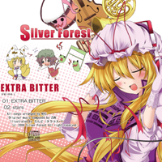 「EXTRA BITTER」は完売致しました ■例大祭5 受かりました スペースは「い49b」です 東方アレンジCD新作を頒布予定です ■サンクリ38無事終了 スペースに来てくださった方々ありがとうございました プレビュー版CD「EXTRA BITTER」ですが、開始25分ほどで無くなってしまいまして 手に取る事ができなかった方は、大変申し訳ありませんでした また次のイベントにでも持って行きますので、よろしくお願いします ■2月10日(日) サンクリ38 A1ホール A-49a 次回作のプレビュー版CD「EXTRA BITTER」を頒布予定です 頒布予定のCD「東方円舞曲」「東方萃奏楽」「Phantasm Brigade」「東方月見が丘」「Sentence」「東方蒼天歌」各1000円 新刊「EXTRA BITTER」200円 (2曲入りプレビュー版CD-R イベント限定の予定です) ■うみねこのなく頃に にSilver Forestとして初の楽曲提供が決まりました 「ひぐらしのなく頃に」などでおなじみの07th Expansionさん「うみねこのなく頃に episode2」に Silver Forestの楽曲を使って頂きました ■明けましておめでとうございます ミ☆ 冬コミでSilver Forestのスペースに来て下さった方、本当にありがとうございました！ ■うみねこのなく頃に にSilver Forestとして初の楽曲提供が決まりました ■初のフルボーカル東方アレンジ 「東方蒼天歌」を冬コミで頒布しました ゲストボーカルにアニメCLANNAD「だんご大家族」を歌う 茶太さん ゴムさん、めらみぽっぷさんを迎えお送りするフルボーカル東方アレンジCD ■冬コミ新刊は、Silver Forest初のフルボーカル東方アレンジ 「東方蒼天歌」 ゲストボーカルにアニメCLANNAD「だんご大家族」を歌う 茶太さん ゴムさん、めらみぽっぷさんを迎えお送りするフルボーカル東方アレンジCD ボーカル曲10曲とカラオケ1曲を含む全11曲 頒布場所は 3日目(12/31) 西ホール あ-33b Silver Forest です ■冬コミ情報 新作「東方蒼天歌」 「東方ねば～ランド」 既刊 Sentence、東方月見が丘、Phantasm Brigade、東方萃奏楽、GRAZE を全て1000円で頒布予定です 西ホール あ-33b Silver Forest でお待ちしております スペースにはNYO、アキ、Kanaがいる予定です ■Silver Forestとsun3 FielD主催の合同企画CD「東方ねば～ランド」を冬コミで頒布予定 ノンストップ東方4つ打ちアレンジで、ボーカル曲2曲を含む全10曲 頒布場所は 3日目(12/31) 西ホール あ-33b Silver Forest です ■C73に向けて東方アレンジCD 第9弾の制作に入りました ■東方アレンジCD 第2弾「東方円舞曲」が再販中です ■冬コミ当選しました！ 3日目(12/31) 西ホール あ-33b 東方アレンジCD 新作を頒布予定です ■10月8日(月祝)のイベント合わせの新刊 間に合いました！ 全13曲入りプレスCD「Sentence」 風神録アレンジ3曲、カラオケ8曲、その他2曲 頒布価格は1000円の予定、頒布場所は サンクリ37：Bホール ア-29a M3：ミ-08 となっています もう2度とないだろうイベントバッティングでしたが、何とか乗り切りました スペースに来てくださった方、ありがとうございました。 ■夏コミスペースに来て下さった方 ありがとうございました！ ■Cherry Phantasmが完売しました ■夏コミ(コミックマーケット72) 17日(金曜日)東3「サ-47b」で新作「東方月見が丘」を頒布予定 持っていくCDは東方月見が丘、Phantasm Brigade、東方萃奏楽、GRAZE、Cherry Phantasmの予定です Cherry Phantasmが500円、それ以外は1000円の予定です スペース 東3「サ-47b」には、NYOとアキとnanoがいる予定です ■東方月見が丘の特設サイトを開設しました クロスフェードDEMOをアップしました 巨大バナーの△をクリックでmp3試聴可能 ■夏コミ(コミックマーケット72)スペース告知です 1日目(金曜日) 東3「サ-47b」です。 夏コミ合わせで東方アレンジCD 新作をリリースする予定です。 ■M3秋に当選しました ■次回作の制作に入りました → 入稿完了 早くも7枚目です ■6/17 サンクリ36 スペースは「ム-24b」です。 「Phantasm Brigade」「東方萃奏楽」「GRAZE」「東方円舞曲」「Cherry Phantasm」の5タイトルを頒布予定です。 「Cherry Phantasm」はバルクCD-Rで500円、他は1000円での販売予定です。 当日スペースにはNYOとNanaがいる予定です。 ■東方蒼幻燈が完売しました
|
| ||||||||||||||||||||||||||||||||||||||||||||||||||||||||